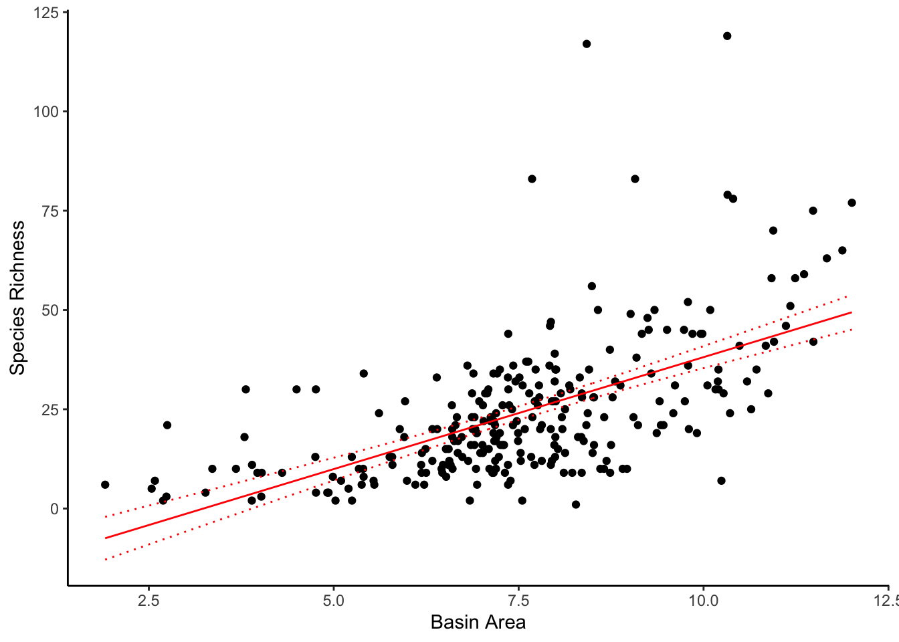

Chapter 5 Catch-up
This chapter is a review of various applications and functions of the code we have covered so far.
We’ll start as always by loading all the necessary packages:
list_pkgs <- c("tidyverse", "datasets", "stringr", "XML", "RCurl", "ggplot2", "rfishbase", "ggridges")
new_pkgs <- list_pkgs[!(list_pkgs %in% installed.packages()[, "Package"])]
if (length(new_pkgs) > 0) install.packages(new_pkgs)
library("tidyverse")
library("datasets")
library("stringr")
library("XML")
library("RCurl")
library("ggplot2")
library("rfishbase")
library("ggridges")5.1 Loops in R
5.1.1 Some simple examples
# simple example with a for loop
## convert all the names to uppercase letters
names = c('Maria','Thomas','Andreas')
#initialize uppercase names
upper_names = rep(NA,length(names))
for (i in 1:length(names)){
#convert to uppercase
upper_name = toupper(names[i])
#add it to upper_names
upper_names[i] = upper_name
}
upper_names## [1] "MARIA" "THOMAS" "ANDREAS"# equivalent operation with the lapply
lapply(names,toupper)## [[1]]
## [1] "MARIA"
##
## [[2]]
## [1] "THOMAS"
##
## [[3]]
## [1] "ANDREAS"# simple example with a while loop
## calculate the sum of the values
values = c(2,4,6)
#initialize index
i <- 1
#initialize sum
sum <- 0
while (i <= 3){# for as long as i is smaller or equal to 3, execute the code below
# add the next value to the sum
sum = sum + values[i]
#update the index
i <- i+1
}
#print the sum
cat("Sum = ", sum)## Sum = 12For loops with breaks:
## Print all the numbers until the number 10 appers. Then stop the loop
values = c(3,1,5,18,10,12,13)
for (i in 1:length(values)){
#print value
cat(values[i],'\n')
#check the printed number
if (values[i] == 10){
break # if the number is 10 stop the loop
}
}## 3
## 1
## 5
## 18
## 10# while true loop
## Print all the numbers until the number 10 appers. Then stop the loop
values = c(3,1,5,18,10,12,13)
#initialize index
i <- 1
while (TRUE){# It always gets inside and executes the code. The loop only stops when the break starement is encountered
#print value
cat(values[i],'\n')
#check the printed number
if (values[i] == 10){
break # if the number is 10 stop the loop
}
#otherwise update the index and continue
i <- i + 1
}## 3
## 1
## 5
## 18
## 105.1.2 Nested loops
values <- matrix(c(1,2,3,4,5,6), nrow = 2 ,ncol = 3)
values## [,1] [,2] [,3]
## [1,] 1 3 5
## [2,] 2 4 6# nested loops
## find the sum of the values per column
#initialize the sums of the columns to zero
col_sum <- rep(0,ncol(values))
#iterate over the columns
for (j in 1:ncol(values)){
#iterate over the rows for each column
for (i in 1:nrow(values)){
#calculate the sum of the jth column by adding the values of each row (of the jth column)
col_sum[j] <- col_sum[j] + values[i,j]
}
}
col_sum## [1] 3 7 115.1.3 Exercise
Create a for loop program that estimates the sum of each row. However it has to take into account only the numbers that are greater than 2. If you get it right, you should come up with 3 for the first row and 15 for the second row.
values <- matrix(c(3,4,1,5,2,6),nrow=2,ncol=3)
values## [,1] [,2] [,3]
## [1,] 3 1 2
## [2,] 4 5 65.2 Functional programming using purr
purrr (Henry and Wickham 2020) is tidyverse’s version of the base R’s apply (lapply(), sapply(),..etc) functions for iterating over objects and lists. But purrr is a lot more powerful than that! While the main data-type used in dplyr is the data frame, for purrr it is lists. Let us look at a few map functions and how they can be used to replace apply functions / loops in R. For this we’ll use the iris data set from the R package datasets (R Core Team 2021). Then we look at nested data handling and a fairly realistic workflow. Splitting the data based on some column, fitting multiple models to each split, and extracting the R^2 for these models. Let us first load in the required libraries.
library('tidyverse')
library('datasets')
data(iris)# Let's define a vector with values from 1 to 10
vector_1 <- c(1:10)
# Next we define a function to compute the square of a number
square <- function(.x){
return (.x^2)
}
# What happens if we apply our function to vector_1? Of course, it squares every element!
vector_1## [1] 1 2 3 4 5 6 7 8 9 10square(vector_1)## [1] 1 4 9 16 25 36 49 64 81 100The same can be done using map() functions, as there is nothing wrong with them, but the output format we get, can become a little ambiguous (recall sapply()), and the function syntax can become a little inconsistent. The input to a map() function is either: list, vector, or a dataframe. For lists and vectors the iteration is carried over the elements of the list/vector. For dataframes, the iteration is carried over the columns of the dataframe. Here’s a quick overview over the different functions with their outputs and object classes below as code. Note that .x stands for the input object and .f for the function that you want to apply:
map(.x, .f)is the main mapping function and returns a listmap_df(.x, .f)takes data frame as input and returns onemap_dbl(.x, .f)returns a numeric (double) vectormap_chr(.x, .f)returns a character vectormap_lgl(.x, .f)returns a logical vector
map(vector_1, square)## [[1]]
## [1] 1
##
## [[2]]
## [1] 4
##
## [[3]]
## [1] 9
##
## [[4]]
## [1] 16
##
## [[5]]
## [1] 25
##
## [[6]]
## [1] 36
##
## [[7]]
## [1] 49
##
## [[8]]
## [1] 64
##
## [[9]]
## [1] 81
##
## [[10]]
## [1] 100map_df(as.data.frame(vector_1), square)## # A tibble: 10 × 1
## vector_1
## <dbl>
## 1 1
## 2 4
## 3 9
## 4 16
## 5 25
## 6 36
## 7 49
## 8 64
## 9 81
## 10 100map_dbl(vector_1, square)## [1] 1 4 9 16 25 36 49 64 81 100map_chr(vector_1, square)## [1] "1.000000" "4.000000" "9.000000" "16.000000" "25.000000"
## [6] "36.000000" "49.000000" "64.000000" "81.000000" "100.000000"# map_lgl(vector_1, square) - useless because numbers except 1 and 0 cannot be turned into logic operators5.2.1 Shortcuts in a purrr function
We can also define inline functions using the ~ syntax. This means that you can directly define a function that has to be applied to your input object(s) without having to define it separately. Note that this allows you to combine multiple input variables as you whish. For example, if you want to multiply x and y, you would define the function as ~(.x * .y). In the list below, the multiplication can be swapped arbitrarily and is thus any operation is generally referred to by using operation. Also note that for multiple inputs, you need to adjust the map() function to map2() or pmap() Play around with the codes below to get a feeling for this formulation! Here are some examples explained:
~ operation .becomesfunction(x) x.: map(input, ~ (2 + . )) adds 2 to every element in your input~ .x operation .ybecomesfunction(x, y) .x .y.: map2(input1, input2, ~ (.x + .y )) means every input1 element is added to the respective input2 element.~ ..1 operation ..2 operation ..etcbecomesfunction(1, 2, etc): pmap(list(input1, input2, input3), ~ (..3 + ..1 - ..2)) for example adds the first element in input1 to and subtracts the first element in input2 from the first element in input 3. The same is done for the second element of each input and so on. In other words the elements of the list or vector you give as input are paired up depending on their position. Note thatpmap()requires a list for multiple inputs.
vector_2 <- rep(5,10) # Vector holding 10 elements which are a 5
vector_3 <- seq(1, 10, 1) # Vector holding elements from 1 to 10 with 1 as interval (same as vector_1)
map_dbl(vector_1, ~ (.x^2)) # Does the same as above using our pre-defined square() function## [1] 1 4 9 16 25 36 49 64 81 100map_dbl(vector_1, ~ (.x + 1))## [1] 2 3 4 5 6 7 8 9 10 11map2_dbl(vector_1, vector_2, ~(.x * .y))## [1] 5 10 15 20 25 30 35 40 45 50pmap_dbl(list(vector_1, vector_2, vector_3), ~(..1*..2 + ..3))## [1] 6 12 18 24 30 36 42 48 54 60pmap_dbl(list(vector_1, vector_2, 1), ~(..1*..2 + ..3)) # What if vector_3 is a 1? It simply takes 1 for every operation!## [1] 6 11 16 21 26 31 36 41 46 515.2.2 Workflow: nested data, map and mutate
Now let us consider workflow with the iris dataset from R. We want to fit a linear model to predict the the Sepal.length as a function of all the other features in the dataset. But we want a different linear model for each type of species. This is pretty realistic as one would have different species to have different “models” for their sepal length. After loading the data, let us first group all the rows in our dataframe by the Species. Then we can use the nest() function, which gives us a nested dataframe for each unique entry in the grouping column. The code below walks you through every step to access the R2 values of different models and then in the end combines everything in one simple pipe. To have a in-depth look at these functionalities, look up the purrr documentation.
df <- iris
head(df)## Sepal.Length Sepal.Width Petal.Length Petal.Width Species
## 1 5.1 3.5 1.4 0.2 setosa
## 2 4.9 3.0 1.4 0.2 setosa
## 3 4.7 3.2 1.3 0.2 setosa
## 4 4.6 3.1 1.5 0.2 setosa
## 5 5.0 3.6 1.4 0.2 setosa
## 6 5.4 3.9 1.7 0.4 setosanested_iris <- iris %>% group_by(Species) %>% nest()
nested_iris # See that for every species there is a tibble defined ## # A tibble: 3 × 2
## # Groups: Species [3]
## Species data
## <fct> <list>
## 1 setosa <tibble [50 × 4]>
## 2 versicolor <tibble [50 × 4]>
## 3 virginica <tibble [50 × 4]>str(nested_iris) # Each of these tibbles holds information on the other 4 variables for this species## grouped_df [3 × 2] (S3: grouped_df/tbl_df/tbl/data.frame)
## $ Species: Factor w/ 3 levels "setosa","versicolor",..: 1 2 3
## $ data :List of 3
## ..$ : tibble [50 × 4] (S3: tbl_df/tbl/data.frame)
## .. ..$ Sepal.Length: num [1:50] 5.1 4.9 4.7 4.6 5 5.4 4.6 5 4.4 4.9 ...
## .. ..$ Sepal.Width : num [1:50] 3.5 3 3.2 3.1 3.6 3.9 3.4 3.4 2.9 3.1 ...
## .. ..$ Petal.Length: num [1:50] 1.4 1.4 1.3 1.5 1.4 1.7 1.4 1.5 1.4 1.5 ...
## .. ..$ Petal.Width : num [1:50] 0.2 0.2 0.2 0.2 0.2 0.4 0.3 0.2 0.2 0.1 ...
## ..$ : tibble [50 × 4] (S3: tbl_df/tbl/data.frame)
## .. ..$ Sepal.Length: num [1:50] 7 6.4 6.9 5.5 6.5 5.7 6.3 4.9 6.6 5.2 ...
## .. ..$ Sepal.Width : num [1:50] 3.2 3.2 3.1 2.3 2.8 2.8 3.3 2.4 2.9 2.7 ...
## .. ..$ Petal.Length: num [1:50] 4.7 4.5 4.9 4 4.6 4.5 4.7 3.3 4.6 3.9 ...
## .. ..$ Petal.Width : num [1:50] 1.4 1.5 1.5 1.3 1.5 1.3 1.6 1 1.3 1.4 ...
## ..$ : tibble [50 × 4] (S3: tbl_df/tbl/data.frame)
## .. ..$ Sepal.Length: num [1:50] 6.3 5.8 7.1 6.3 6.5 7.6 4.9 7.3 6.7 7.2 ...
## .. ..$ Sepal.Width : num [1:50] 3.3 2.7 3 2.9 3 3 2.5 2.9 2.5 3.6 ...
## .. ..$ Petal.Length: num [1:50] 6 5.1 5.9 5.6 5.8 6.6 4.5 6.3 5.8 6.1 ...
## .. ..$ Petal.Width : num [1:50] 2.5 1.9 2.1 1.8 2.2 2.1 1.7 1.8 1.8 2.5 ...
## - attr(*, "groups")= tibble [3 × 2] (S3: tbl_df/tbl/data.frame)
## ..$ Species: Factor w/ 3 levels "setosa","versicolor",..: 1 2 3
## ..$ .rows : list<int> [1:3]
## .. ..$ : int 1
## .. ..$ : int 2
## .. ..$ : int 3
## .. ..@ ptype: int(0)
## ..- attr(*, ".drop")= logi TRUEmap(nested_iris$data, dim) # Display the dimension of every data frame saved in nested_iris (50 entries for 4 features)## [[1]]
## [1] 50 4
##
## [[2]]
## [1] 50 4
##
## [[3]]
## [1] 50 4# Let's use the nested data frame to create a data frame holding only the linear models:
list_linear_models <- map(nested_iris$data, # Give the list of data frames as input to map
~lm(Sepal.Length ~ ., # For every data frame, create a linear model with lm() where
# Sepal.Length is the response and all other variables predictors
data = .x)) # The data for each linear model is simply the input .x, i.e. the df
list_linear_models %>%
map(summary) %>% # Apply summary() on all linear models
map("r.squared") # Extract the r.squared value of each linear model## [[1]]
## [1] 0.5751375
##
## [[2]]
## [1] 0.6050314
##
## [[3]]
## [1] 0.7652193# Now we know how to create these models, so let's add them as a variable to our nested data frame
model_iris <- nested_iris %>% mutate(linear_model = map(data, ~lm(Sepal.Length~., data = .x))) # To add models
model_iris <- model_iris %>% mutate(summary = map(linear_model, ~summary(.))) # To add summary of each model
model_iris## # A tibble: 3 × 4
## # Groups: Species [3]
## Species data linear_model summary
## <fct> <list> <list> <list>
## 1 setosa <tibble [50 × 4]> <lm> <smmry.lm>
## 2 versicolor <tibble [50 × 4]> <lm> <smmry.lm>
## 3 virginica <tibble [50 × 4]> <lm> <smmry.lm># Putting it all together and extracting the R^2 value for each linear model
iris %>% # Use iris data frame
group_by(Species) %>% # Select variable to group by
nest() %>% # Create nested df by groups
mutate(linear_model = map(data, ~lm(Sepal.Length~., data = .x))) %>% # Create lm for each group
mutate(summary = map(linear_model, ~summary(.))) %>% # Create summary for each group
mutate(rsq = map_dbl(summary, "r.squared")) %>% # Save r.squared from each lm as rsq
select(c(Species,rsq)) # Only pick Species and rsq to display## # A tibble: 3 × 2
## # Groups: Species [3]
## Species rsq
## <fct> <dbl>
## 1 setosa 0.575
## 2 versicolor 0.605
## 3 virginica 0.7655.3 String Manipulations
5.3.1 Introduction to strings
The stringr package (Hadley Wickham 2019b) offers a set of very handy tools to work with strings. In this document, we will show you how to do some basic string manipulations with `stringr. Further useful sources are the stringr cheathseet and the Chapter 14 in the book R for Data Science.
# Let's load the package and save two srings
library(stringr)
s1 <- "A1 BC23 DEF456"
s2 <- c("A1","BC23","DEF456")
# String lengths
str_length(s1) # spacing counts ## [1] 14str_length(s2) # returns length of each string vector## [1] 2 4 6# Combining strings
str_c("x", "y") ## [1] "xy"str_c('p',s2,'q') # works on each element of the string vector## [1] "pA1q" "pBC23q" "pDEF456q"# Changing lower/upper case
str_to_lower(s1)## [1] "a1 bc23 def456"str_to_upper("paradox? is this now lower or upper case?")## [1] "PARADOX? IS THIS NOW LOWER OR UPPER CASE?"str_sub() is inclusive - they include the characters at both start and end positions. For example, str_sub(string, 1, -1) will return the complete substring, from the first character to the last.
str_sub(s1, 1, 6) # get a substing from 1st to 6th elements## [1] "A1 BC2"str_sub(s2, 1, 2) # get substings from 1st to 2nd elements## [1] "A1" "BC" "DE"str_sub(s1, 8) # get a substring from 8th element onwards## [1] " DEF456"str_sub(s2, 2) # get substrings from 2nd element onwards## [1] "1" "C23" "EF456"str_split(string, pattern,...) allows to vectorise strings over pattern.
str_split(s2, pattern = " ")## [[1]]
## [1] "A1"
##
## [[2]]
## [1] "BC23"
##
## [[3]]
## [1] "DEF456"fruits <- c(
"apples and oranges and pears and bananas",
"pineapples and mangos and guavas")
str_split(fruits, pattern = " and ")## [[1]]
## [1] "apples" "oranges" "pears" "bananas"
##
## [[2]]
## [1] "pineapples" "mangos" "guavas"5.3.2 Matching and extracting patterns
str_match(string, pattern,...) returns the first pattern match found in each string, as a matrix with a column for each ( ) group in pattern. str_match_all() returns all matched patterns. The pattern can be a substring from the strinh vectors, or can be a generalized pattern to detect for example certain sequences of alphabetic and numeric characters. Please refer to this info page for an introduction to pattern usages.
# Detect certain patterns in a vector of characters
str_detect(s1, 'A') # s1 is just one string!## [1] TRUEstr_detect(s2, 'A') # s2 splitted s1 into three strings## [1] TRUE FALSE FALSE# Detect substring (pattern)
pattern1 = "BC" # substring as a pattern
str_match(s1, pattern1)## [,1]
## [1,] "BC"pattern2 = "([[:alpha:]]+)([[:digit:]]+)" # pattern2 = alphabetic characters + digits
str_match(s1, pattern2)## [,1] [,2] [,3]
## [1,] "A1" "A" "1"str_match_all(s1, pattern2)## [[1]]
## [,1] [,2] [,3]
## [1,] "A1" "A" "1"
## [2,] "BC23" "BC" "23"
## [3,] "DEF456" "DEF" "456"str_extract(string, pattern,...) returns the first pattern match found in each string, as a vector, str_extract_all() again returns all matched patterns.
str_extract(s1, pattern2)## [1] "A1"str_extract_all(s1, pattern2)## [[1]]
## [1] "A1" "BC23" "DEF456"# an equivalent way using basic R:
regmatches(s1, gregexpr(pattern2, s1)) ## [[1]]
## [1] "A1" "BC23" "DEF456"str_replace(string, pattern, replacement,...) replaces matched patterns in a string. Alternatively, you can replace substrings by identifying the substrings with str_sub() and assigning into the results.
str_replace_all(s1, " ", "-")## [1] "A1-BC23-DEF456"str_sub(s1, 1, 2) <- "XX" # Replace the first two positions in s1
s1## [1] "XX BC23 DEF456"5.3.3 Advanced example
Now we look at a slightly more complicated example. First we give an introduction to some of the general patterns:
- [a-z]: matches every character between a and z (in Unicode code point order)
- [abc]: matches a, b, or c.
- {n}: exactly n matches
If we look at the pattern defined by phone in the code below:
1. ([2-9][0-9]{2}) means the 1st digit is between 2 and 9, and the 2nd and 3rd digits are both between 0 and 9.
2. [- .] denotes the linkages are symbols, which is one of the 3: “-”, ” “(spacing) or”.”.
3. ([0-9]{3}) means the 4th to 6th digits are all between 0 and 9.
4. ([0-9]{4}) means the last 4 digits are all between 0 and 9.
strings <- c(" 219 733 8965", "329-293-8753 ",
"239 923 8115 and 842 566 4692",
"Work: 579-499-7527",
"$1000",
"Home: 543.355.3679")
phone <- "([2-9][0-9]{2})[- .]([0-9]{3})[- .]([0-9]{4})"
str_extract_all(strings, phone)## [[1]]
## [1] "219 733 8965"
##
## [[2]]
## [1] "329-293-8753"
##
## [[3]]
## [1] "239 923 8115" "842 566 4692"
##
## [[4]]
## [1] "579-499-7527"
##
## [[5]]
## character(0)
##
## [[6]]
## [1] "543.355.3679"5.4 Web-scraping in a nut-shell
In this session we review some important concepts from web scraping. We will extract the price category of the Coregonus lavaretus. We will do that first using the techniques from week 4 and then using the API rfishbase. The webpage FishBase for the Coregonus lavaretus contains information on its price category which we want to extract.
Let us first load the packages. So the package xml is a tool that is used for Parsing and Generating XML Within R. This package contain many functions e.g. getHTMLLinks, getNodeSet, readHTMLTable etc. Whereas package RCurl is used to get General Network (HTTP/FTP/…) Client Interface for R. It is a wrapper for libcurl and provides functions to compose general HTTP requests and provides convenient functions to fetch URIs, get & post forms, etc. and process the results returned by the Web server.
library(XML)
library(RCurl)First, we save our fish species in the object x. Next, we use the function paste() to convert its arguments to character strings and concatenate them to get the link of the webpage from which we are going to extract the data. We concatenate the URL in order to get the webpage with the summary of the species Coregonus-lavaretus. We do not put any separation between the arguments, so we use sep = ““.
x <- "Coregonus-lavaretus"
url <- paste("http://www.fishbase.de/summary/",x,".html",sep="")We will now use the function getURLContent() to retrieve the source of a webpage, which is especially useful for retrieving pages for data processing. We will apply the function htmlParse() to obtain an R object and extract the div blocks. Now we are ready to get the price category of the Coregonus lavaretus. We will use the function xmlValue() to get the value at the node.
c <- htmlParse(getURLContent(url, followlocation=TRUE))
c_div <- getNodeSet(c, "//div ")
values_nodes <- lapply(c_div,xmlValue)
values_nodes## [[1]]
## [1] ""
##
## [[2]]
## [1] ""
##
## [[3]]
## [1] "\r\n\t\tYou can sponsor this page\r\n\t\t\t\t\t\t"
##
## [[4]]
## [1] "You can sponsor this page\r\n\t\t\t\t\t"
##
## [[5]]
## [1] "\r\n\t\t\r\n\t\t\r\n\t\t\tCommon name (e.g. trout)\r\n\t\t\t\r\n\t\t\t\tcontainsbegins withbegins withends withis\r\n\r\n\t\t\tGenus + Species (e.g. Gadus morhua)\r\n\t\t\t\r\n\t\t\t\t\r\n\t\t\r\n\t\t\r\n\t\t\r\n\t\t\t\r\n\t\t\t\r\n\t\t\t\t\r\n\t\t\t\r\n\t\t\t \r\n\t\t\t\r\n\t\t\t\r\n\r\n\t\t\t\r\n\t\t\t\r\n\r\n\t\t\r\n\t\t \r\n\t\r\n\t\r\n\t\tAbout this page\r\n\t\t\r\n\t\t\t\tMore Info\r\n\t\t\t\r\n\t\t\t\r\n\t\t\t\tPlus d'info\r\n\t\t\t\r\n\t\t\t\r\n\t\t\t\tMais info\r\n\t\t\t\r\n\r\n\t\t\r\n\r\n\t\r\n\t\tLanguages\r\n\t\tArabic\r\n\t\t\tBahasa/Malay\r\n\t\t\tBangla\r\n\t\t\tChinese(Si)\r\n\t\t\tChinese(Tr)\r\n\t\t\tDeutsch\r\n\t\t\tEnglish\r\n\t\t\tEspañol\r\n\t\t\tFarsi\r\n\t\t\tFrançais\r\n\t\t\tGreek\r\n\t\t\tHindi\r\n\t\t\tItaliano\r\n\t\t\tJapanese\r\n\t\t\tLao\r\n\t\t\tNederlands\r\n\t\t\tPortuguês(Br)\r\n\t\t\tPortuguês(Pt)\r\n\t\t\tRussian\r\n\t\t\tSwedish\r\n\t\t\tThai\r\n\t\t\tVietnamese\r\n\t\t\r\n\r\n\t\r\n\t\tUser feedbacks\r\n\t\tComments & Corrections\r\n\t\t\tFish Forum\r\n\t\t\tGuest Book\r\n\t\t\tFacebook\r\n\t\t\t\r\n\t\t\r\n\r\n\t\r\n\t\tCitation\r\n\t\r\n\r\n\t\r\n\t\tUploads\r\n\t\tAttach website\r\n\t\t\tUpload photo\r\n\t\t\tUpload video\r\n\t\t\tUpload references\r\n\t\t\tFish Watcher\r\n\t\t\r\n\r\n\t\r\n\t\tRelated species\r\n\t\tSpecies in Coregonus\r\n\t\t\t\tSpecies in Salmonidae\r\n\t\t\t- Classification -Coregoninae\r\n\t\t\t\t\tSalmonidae\r\n\t\t\t\t\tSalmoniformes\r\n\t\t\t\t\tActinopteri\r\n\t\t\t\t\tChordata\r\n\t\t\t\t\tAnimalia\r\n\t\t\t\t\r\n\t\t \r\n\t\t\r\n\r\n\r\n\t\t\r\n\t\t\r\n\t\t\t\r\n\t\t\t\tCoregonus lavaretus (Linnaeus, 1758)\t\t\t\r\n\t\t\t\r\n\t\t\t\tEuropean whitefish\t\t\t\r\n\t\t\r\n\r\n\t\t\r\n\r\n\t\t\r\n\t\t\r\n\t\t\t\t\t\t\r\n\t\t\t\t\t\t\r\n\t\t\t\t\r\n\t\t\t\t\tUpload your photos and videos\r\n\t\t\t\t\r\n\t\t\t\tPictures | \r\n\t\t\t\t\tVideos | Stamps, Coins Misc. | Google imageCoregonus lavaretus\r\n\t\t\t\t\tPicture by\r\n\t\t\t\t\t\r\n\t\t\t\t\tØstergaard, T.\r\n\r\n$(window).load(function() {\r\n\tif($(\"#ss-photo-full\").length > 0){\t\t\t//the photo is full width\r\n\t\t$('#image-slider').swipeslider({sliderHeight:'27%', autoPlayTimeout: 8000});\r\n\t}else{\r\n\t\t$('#image-slider').swipeslider({sliderHeight:'52%', autoPlayTimeout: 8000});\r\n\t}\r\n});\r\n\r\n.swipslider{\r\n\tmax-width: 310px;\r\n\tmargin:\tauto;\r\n}\r\n\r\n\r\n\t\t\t \r\n\t\t \r\n\r\n\t\t\r\n\t\t\r\n\t\t\t \r\n\t\t\t\r\n\t\t\t\tClassification / Names \t\t\t\t \r\n\t\t\t\tCommon names | Synonyms | Catalog of Fishes(genus, species) | ITIS | CoL | WoRMS | Cloffa\t\t\t\t\r\n\t\t\t\r\n\t\t\t\t\r\n\t\t\t\tActinopteri (ray-finned fishes) > Salmoniformes (Salmons) > Salmonidae (Salmonids) > Coregoninae\r\n\t\t\t\t\t\t\tEtymology: Coregonus: Greek, kore = pupils of the eye + Greek, gonia = angle (Ref. 45335). More on author: Linnaeus.\t\t\t\t\t\t\r\n\t\t\t\t\t\r\n\t\t\t\r\n\t\t\t\r\n\t\t\t\r\n\t\t\t\r\n\t\t\t\t\r\n\t\t\t\t\tEnvironment: milieu / climate zone / depth range / distribution range\t\t\t\t\t\r\n\t\t\t\t\t\tEcology\t\t\t\t\t\r\n\t\t\t\t\r\n\t\t\t\t\r\n\t\t\t\t\r\n\t\t\t\t\tFreshwater; brackish; demersal; pH range: 7.0 - 7.5; dH range: 20 - ?; anadromous (Ref. 51243); depth range - m (Ref. ), usually - m (Ref. ). Temperate; 4°C - 16°C (Ref. 2059); 73°N - 40°N\t\t\t\t\r\n\t\t\t\t\r\n\t\t\t\r\n\t\t\t\r\n\t\t\t\r\n\t\t\t\r\n\t\t\t\t\r\n\t\t\t\t\tDistribution\t\t\t\t\t\r\n\t\t\t\t\tCountries | FAO areas | Ecosystems | Occurrences | Point map | Introductions | Faunafri\t\t\t\t\r\n\t\t\t\t\r\n\t\t\t\t\r\n\t\t\t\t\r\n\t\t\t\t\tEurope: Native to Lake Bourget (France) and Geneva (Switzerland, France). Population of Lake Aiguebelette (France) apparently introduced, but a 'lavaret' had already been recorded from there in the 17th century (Ref. 59043). Other authors assume it to be a superspecies occurring in Great Britain and Alpine areas of Central Europe. Has been stocked into many other places in Europe outside its native range. There are many parallel and wrong scientific names for this species in use because of the problems in classifying the genus Coregonus (Ref. 7495). Appendix III of the Bern Convention (protected fauna). Asia: introduced to Iran (Ref. 39702).\r\n\t\t\t\t\r\n\t\t\t\r\n\r\n\t\t\t\r\n\t\t\t\t\r\n\t\t\t\t\tLength at first maturity / Size / Weight / Age\r\n\t\t\t\t\r\n\t\t\t\t\r\n\t\t\t\t\tMaturity: Lm27.1, range 40 - ? cm Max length : 73.0 cm TL male/unsexed; (Ref. 40637); max. published weight: 10.0 kg (Ref. 35388)\t\t\t\t\r\n\t\t\t\t\r\n\t\t\t\r\n\r\n\t\t\t\r\n\t\t\t\t\t\t\r\n\t\t\t\t\r\n\t\t\t\t\tShort description\t\t\t\t\t\r\n\t\t\t\t\tMorphology | Morphometrics\t\t\t\t\t\r\n\t\t\t\t\r\n\t\t\t\t\r\n\t\t\t\t\r\n\t\t\t\t\t\r\n\t\t\t\tDorsal\r\n\t\t\t\tspines\r\n\t\t\t\t(total): 3 - 5;\r\n\t\t\t\t\tDorsal\r\n\t\t\t\t\tsoft rays\r\n\t\t\t\t\t(total): 9-12;\r\n\t\t\t\tAnal\r\n\t\t\t\tspines: 3-5;\r\n\t\t\t\t\tAnal\r\n\t\t\t\t\tsoft rays: 10 - 13. Mouth small with protruding upper jaw. Silvery body (Ref. 35388). Caudal fin with 19 soft rays (Ref. 40476).\t\t\t\t\r\n\t\t\t\t\r\n\t\t\t\r\n\t\t\t\r\n\t\t\t\r\n\t\t\t\r\n\t\t\t\r\n\t\t\t\r\n\t\t\t\t\r\n\t\t\t\t\tBiology\t\t\t\t\t\r\n\t\t\t\t\t\t\r\n\t\t\t\t \r\n\t\t\t\tGlossary\r\n\t\t\t\t\r\n\t\t\t\t\r\n\t\t\t\t (e.g. epibenthic)\r\n\t\t\t\t\r\n\t\t\t\r\n\t\t\t\t\r\n\t\t\t\r\n\r\n\t\t\t\r\n\t\t\t\r\n\t\t\t\r\n\t\t\t\tGregarious lacustrine forms (Ref. 2163) and anadromous estuarine forms, rarely in full saltwater. Feeds on planktonic crustaceans, or larger benthic crustaceans in brackish water. Movement in water column as a function of zooplankton repartition (Ref. 2163). Spawns in gravel, near shore, in shallow water, in December (Ref. 59043). Likely to benefit from environmental regulations in France passed on 8/12/88 (Ref. 2163).\t\t\t\r\n\t\t\t\r\n\t\t\t\r\n\r\n\t\t\t\r\n\t\t\t\r\n\t\t\t\t\r\n\t\t\t\t\tLife cycle and mating behavior\t\t\t\t\t\r\n\t\t\t\t\tMaturity | Reproduction | Spawning | Eggs | Fecundity | Larvae\t\t\t\t\r\n\t\t\t\t\r\n\t\t\t\t\r\n\t\t\t\t\r\n\t\t\t\tSpawning takes place at night. \t\t\t\t\r\n\t\t\t\t\r\n\t\t\t\r\n\r\n\r\n\r\n\t\t\t \r\n\t\t\t\t\r\n\t\t\t\t\tMain reference \t\t\t\t\t\r\n\t\t\t\t\t\tUpload your references | References | Coordinator | Collaborators\r\n\t\t\t\t\r\n\t\t\t\t\r\n\t\t\t\t\r\n\t\t\t\t\tWheeler, A., 1992. A list of the common and scientific names of fishes of the British Isles. J. Fish Biol. 41(suppl.A):1-37. (Ref. 5204)\r\n\t\t\t\t\r\n\t\t\t\r\n\r\n\t\t\t\r\n\t\t\t\r\n\t\t\t\r\n\t\t\t\t\r\n\t\t\t\t\tIUCN Red List Status (Ref. 124695)\r\n\t\t\t\t\r\n\t\t\t\t\r\n\t\t\t\t\t Vulnerable (VU) (D2); Date assessed: 01 January 2008\t\t\t\t\r\n\t\t\t\t\r\n\r\n\t\t\t\r\n\t\t\t\r\n\t\t\t\t\r\n\t\t\t\t\tCITES \r\n\t\t\t\t\r\n\t\t\t\t\r\n\t\t\t\t\tNot Evaluated\t\t\t\t\r\n\t\t\t\t\r\n\t\t\t\r\n\t\t\t\r\n\t\t\t\r\n\t\t\t\t\r\n\t\t\t\t\tCMS (Ref. 116361)\r\n\t\t\t\t\r\n\t\t\t\t\r\n\t\t\t\t\tNot Evaluated\t\t\t\t\r\n\t\t\t\t\r\n\t\t\t \r\n\r\n\t\t\t\r\n\t\t\t\r\n\t\t\t\t\r\n\t\t\t\t\tThreat to humans \r\n\t\t\t\t\r\n\t\t\t\t\r\n\t\t\t\t\t Harmless\t\t\t\t\r\n\t\t\t\t\r\n\t\t \r\n\t\t\t\t\r\n\t\t\t\t\tHuman uses \t\t\t\t\r\n\t\t\t\t\r\n\t\t\t\t\r\n\t\t\t\t\tFisheries: commercial; aquaculture: commercial; gamefish: yes\t\t\t\t\r\n\t\t\t\t\r\n\r\n\t\t\t\t\r\n\t\t\t\t\r\n\t\t\t\t\tFAO - Aquaculture: production; Fisheries: landings; Publication: search | FishSource | Sea Around Us\t\t\t\t\r\n\t\t\t\t\r\n\t\t\t\t\r\n\t\t\t\t\t\r\n\t\t\t\t\t\tMore information\t\t\t\t\t\r\n\t\t\t\t\t\r\n\t\t\t\t\t\r\n\t\t\t\t\t\tCountriesFAO areasEcosystemsOccurrencesIntroductionsStocksEcologyDietFood itemsFood consumptionRation\r\n\t\t\t\t\t\r\n\t\t\t\t\t\r\n\t\t\t\t\t\tCommon namesSynonymsMetabolismPredatorsEcotoxicologyReproductionMaturitySpawningSpawning aggregationFecundityEggsEgg development\r\n\t\t\t\t\t\r\n\t\t\t\t\t\r\n\t\t\t\t\t\tAge/SizeGrowthLength-weightLength-lengthLength-frequenciesMorphometricsMorphologyLarvaeLarval dynamicsRecruitmentAbundanceBRUVS\r\n\t\t\t\t\t\r\n\t\t\t\t\t\r\n\t\t\t\t\t\tReferencesAquacultureAquaculture profileStrainsGeneticsAllele frequenciesHeritabilityDiseasesProcessingNutrientsMass conversion\r\n\t\t\t\t\t\r\n\t\t\t\t\t\r\n\t\t\t\t\t\tCollaboratorsPicturesStamps, Coins Misc.SoundsCiguateraSpeedSwim. typeGill areaOtolithsBrainsVision\r\n\t\t\t\t\r\n\t\t\t\r\n\t\t\t\r\n\t\t\t\r\n\t\t\t\tTools\r\n\t\t\t\t\r\n\t\t\t\t\r\n\t\t\t\t\tE-book | Field guide | Length-frequency wizard | Life-history tool | Point map | \t\t\t\t\t\tClassification Tree\r\n\t\t\t\t\t\t | Catch-MSY | \t\t\t\t\r\n\t\t\t\t\r\n\t\t\t\r\n\t\t\t\r\n\t\t\t\r\n\t\t\t\tSpecial reports\r\n\t\t\t\t\r\n\t\t\t\t\r\n\t\t\t\t\tCheck for Aquarium maintenance | Check for Species Fact Sheets | Check for Aquaculture Fact Sheets\t\t\t\t\r\n\t\t\t\t\r\n\t\t\t\r\n\t\t\t\r\n\t\t\t\r\n\t\t\t\tDownload XML\r\n\t\t\t\t\r\n\t\t\t\t\r\n\t\t\t\t\tSummary page | Point data | Common names | Photos\t\t\t\t\r\n\t\t\t\t\r\n\t\t\t\r\n\t\t\t\r\n\t\t\t\r\n\t\t\t\t\r\n\t\t\t\t\tInternet sources\r\n\t\t\t\t\r\n\t\t\t\t\r\n\t\t\t\t\tAFORO (otoliths) | Alien/Invasive Species database | Aquatic Commons | BHL | Cloffa | BOLDSystems | Websites from users | Check FishWatcher | CISTI | Catalog of Fishes: genus, species | DiscoverLife | DORIS | ECOTOX | FAO - Aquaculture: production; Fisheries: landings; Publication: search | Faunafri | Fishipedia | Fishtrace | GenBank: genome, nucleotide | GloBI | Google Books | Google Scholar | Google | IGFA World Record | MitoFish | National databases | Otolith Atlas of Taiwan Fishes | PubMed | Reef Life Survey | Socotra Atlas | Tree of Life | Wikipedia: Go, Search | World Records Freshwater Fishing | Zoological Record\t\t\t\t\r\n\t\t\t\t\r\n\t\t\t\r\n\t\t\t\r\n\t\t\t\r\n\t\t\t\t\r\n\t\t\t\t\tEstimates based on models\t\t\t\t\r\n\r\n\t\t\t\t\r\n\t\t\t\t\r\n\t\t\t\tPreferred temperature (Ref. 115969): 5.8 - 12.5, mean 9.5 °C (based on 528 cells).\t\t\t\t\r\n\t\t\t\t \t\t\t\t\r\n\t\t\t\t\r\n\t\t\t\t\t\r\n\t\t\t\t\tPhylogenetic diversity index (Ref. 82805): PD50 = 0.5000 [Uniqueness, from 0.5 = low to 2.0 = high].\t\t\t\t\t\r\n\t\t\t\t\t\r\n \r\n \t\t\t\t\t\r\n\t\t\t\t\t\t\t\t\t\t\t\t\tBayesian length-weight: a=0.00447 (0.00379 - 0.00526), b=3.21 (3.17 - 3.25), in cm total length, based on LWR estimates for this species (Ref. 93245).\t\t\t\t\t\t\r\n\t\t\t\t\t\r\n \t\t\t\t\r\n\t\t\t\t\t\r\n\t\t\t\t\tTrophic level (Ref. 69278): 3.1 ±0.0 se; based on diet studies.\t\t\t\t\t\r\n\r\n\t\t\t\t\r\n\t\t\t\t\t\r\n\t\t\t\t\t\r\n\t\t\t\t\t\t\t\t\t\t\t\r\n\t\t\t\t\r\n\r\n\r\n\r\n\t\t\t\t\r\n\r\n\t\t\t\t\t\r\n\t\t\t\t\tResilience (Ref. 120179): Medium, minimum population doubling time 1.4 - 4.4 years (K=0.3-0.7; tmax=8; Fecundity=3,800 - 169,800).\t\t\t\t\t\r\n\t\t\t\t\r\n\t\t\t\t\t\r\n\t\t\t\t\t\t\t\t\t\t\t\r\n\t\t\t\t\r\n\t\t\t\t\t\r\n\t\t\t\t\tVulnerability (Ref. 59153): Moderate to high vulnerability (51 of 100) .\t\t\t\t\t\r\n\t\t\t\t\r\n\t\t\t\t\t\t\t\t\t\t\r\n\t\t\t\t\t\r\n\t\t\t\t\t\t\t\t\t\t\tPrice category (Ref. 80766): \t\t\t\t\t\tHigh.\r\n\t\t\t\t\t\r\n\t\t\t\t\t\t\t\t\t\t\r\n\t\t\t\t\t\t\r\n\t\t\t\t\r\n\r\n\t\t\t\t\t\t\t\t\t\r\n\t\t\t\t\r\n\t\t\t\t\t\r\n\t\t\t\t\t\tNutrients (Ref. 124155): Calcium = 21.1 [11.5, 46.0] mg/100g ; Iron = 0.245 [0.161, 0.383] mg/100g ; Protein = 18 [17, 19] % ; Omega3 = 1.66 [0.67, 4.60] g/100g ; Selenium = 25.4 [12.0, 66.9] μg/100g ; VitaminA = 5.5 [1.9, 15.6] μg/100g ; Zinc = 0.543 [0.413, 0.702] mg/100g (wet weight); based on nutrient studies.\t\t\t\t\t\r\n\t\t\t\t\r\n\t\t\t\r\n\t\t \r\n\r\n\t\t\r\n\t\t\r\n\t\t\t\r\n\t\t\t\t\r\n\t\t\t\tEntered by Luna, Susan M.\t\t\t\t\r\n\t\t\t\t\r\n\t\t\t\tModified by Sampang-Reyes, Arlene G.\t\t\t\t\r\n\t\t\t\r\n\t\t\t\r\n\t\t\t\r\n\t\t\t\tFish Forum\t\t\t\r\n\t\t\t\r\n\t\t\t\r\n\t\t\t\t\t\t\r\n\t\t\t\t\t\tComments & Corrections\r\n\t\t\t\r\n\t\t\t\r\n\t\t\t\r\n\t\t\t\r\n\t\t\t\tSign our Guest Book\t\t\t\r\n\t\t\t\r\n\t\t\t\r\n\t\t\t\t\r\n\t\t\t\tBack to Search\t\t\t\t\r\n\r\n\t\t\t\t\r\n\t\t\t\tRandom Species\t\t\t\t\r\n\r\n\t\t\t\t\r\n\t\t\t\tBack to Top\t\t\t\t\r\n\t\t\t\r\n\t\t\t\r\n\t\t\t\tAccessed through: Not available\r\n\t\t\t\t\t\t\t\tFishBase mirror site : Kiel, Germany\r\n\t\t\t\t\t\t\tPage last modified by : mrius-barile - 20 July 2016\r\n\t\t\r\n\t\r\n\t\t\r\n\tTotal processing time for the page : 0.8598 seconds\t\t\t\r\n\t\t\r\n\t"
##
## [[6]]
## [1] "\r\n\t\t\tCommon name (e.g. trout)\r\n\t\t\t\r\n\t\t\t\tcontainsbegins withbegins withends withis\r\n\r\n\t\t\tGenus + Species (e.g. Gadus morhua)\r\n\t\t\t\r\n\t\t\t\t\r\n\t\t"
##
## [[7]]
## [1] "\r\n\t\t\t\r\n\t\t\t\r\n\t\t\t\t\r\n\t\t\t\r\n\t\t\t \r\n\t\t\t\r\n\t\t\t\r\n\r\n\t\t\t\r\n\t\t\t\r\n\r\n\t\t\r\n\t\t \r\n\t\r\n\t\r\n\t\tAbout this page\r\n\t\t\r\n\t\t\t\tMore Info\r\n\t\t\t\r\n\t\t\t\r\n\t\t\t\tPlus d'info\r\n\t\t\t\r\n\t\t\t\r\n\t\t\t\tMais info\r\n\t\t\t\r\n\r\n\t\t\r\n\r\n\t\r\n\t\tLanguages\r\n\t\tArabic\r\n\t\t\tBahasa/Malay\r\n\t\t\tBangla\r\n\t\t\tChinese(Si)\r\n\t\t\tChinese(Tr)\r\n\t\t\tDeutsch\r\n\t\t\tEnglish\r\n\t\t\tEspañol\r\n\t\t\tFarsi\r\n\t\t\tFrançais\r\n\t\t\tGreek\r\n\t\t\tHindi\r\n\t\t\tItaliano\r\n\t\t\tJapanese\r\n\t\t\tLao\r\n\t\t\tNederlands\r\n\t\t\tPortuguês(Br)\r\n\t\t\tPortuguês(Pt)\r\n\t\t\tRussian\r\n\t\t\tSwedish\r\n\t\t\tThai\r\n\t\t\tVietnamese\r\n\t\t\r\n\r\n\t\r\n\t\tUser feedbacks\r\n\t\tComments & Corrections\r\n\t\t\tFish Forum\r\n\t\t\tGuest Book\r\n\t\t\tFacebook\r\n\t\t\t\r\n\t\t\r\n\r\n\t\r\n\t\tCitation\r\n\t\r\n\r\n\t\r\n\t\tUploads\r\n\t\tAttach website\r\n\t\t\tUpload photo\r\n\t\t\tUpload video\r\n\t\t\tUpload references\r\n\t\t\tFish Watcher\r\n\t\t\r\n\r\n\t\r\n\t\tRelated species\r\n\t\tSpecies in Coregonus\r\n\t\t\t\tSpecies in Salmonidae\r\n\t\t\t- Classification -Coregoninae\r\n\t\t\t\t\tSalmonidae\r\n\t\t\t\t\tSalmoniformes\r\n\t\t\t\t\tActinopteri\r\n\t\t\t\t\tChordata\r\n\t\t\t\t\tAnimalia\r\n\t\t\t\t\r\n\t\t \r\n\t\t"
##
## [[8]]
## [1] "\r\n\t\t\t\r\n\t\t\t\t\r\n\t\t\t\r\n\t\t\t \r\n\t\t\t\r\n\t\t\t"
##
## [[9]]
## [1] "\r\n\t\t\t\r\n\r\n\t\t\r\n\t\t \r\n\t\r\n\t\r\n\t\tAbout this page\r\n\t\t\r\n\t\t\t\tMore Info\r\n\t\t\t\r\n\t\t\t\r\n\t\t\t\tPlus d'info\r\n\t\t\t\r\n\t\t\t\r\n\t\t\t\tMais info\r\n\t\t\t\r\n\r\n\t\t\r\n\r\n\t\r\n\t\tLanguages\r\n\t\tArabic\r\n\t\t\tBahasa/Malay\r\n\t\t\tBangla\r\n\t\t\tChinese(Si)\r\n\t\t\tChinese(Tr)\r\n\t\t\tDeutsch\r\n\t\t\tEnglish\r\n\t\t\tEspañol\r\n\t\t\tFarsi\r\n\t\t\tFrançais\r\n\t\t\tGreek\r\n\t\t\tHindi\r\n\t\t\tItaliano\r\n\t\t\tJapanese\r\n\t\t\tLao\r\n\t\t\tNederlands\r\n\t\t\tPortuguês(Br)\r\n\t\t\tPortuguês(Pt)\r\n\t\t\tRussian\r\n\t\t\tSwedish\r\n\t\t\tThai\r\n\t\t\tVietnamese\r\n\t\t\r\n\r\n\t\r\n\t\tUser feedbacks\r\n\t\tComments & Corrections\r\n\t\t\tFish Forum\r\n\t\t\tGuest Book\r\n\t\t\tFacebook\r\n\t\t\t\r\n\t\t\r\n\r\n\t\r\n\t\tCitation\r\n\t\r\n\r\n\t\r\n\t\tUploads\r\n\t\tAttach website\r\n\t\t\tUpload photo\r\n\t\t\tUpload video\r\n\t\t\tUpload references\r\n\t\t\tFish Watcher\r\n\t\t\r\n\r\n\t\r\n\t\tRelated species\r\n\t\tSpecies in Coregonus\r\n\t\t\t\tSpecies in Salmonidae\r\n\t\t\t- Classification -Coregoninae\r\n\t\t\t\t\tSalmonidae\r\n\t\t\t\t\tSalmoniformes\r\n\t\t\t\t\tActinopteri\r\n\t\t\t\t\tChordata\r\n\t\t\t\t\tAnimalia\r\n\t\t\t\t\r\n\t\t "
##
## [[10]]
## [1] "\r\n\t\t\t\r\n\t\t\t\tCoregonus lavaretus (Linnaeus, 1758)\t\t\t\r\n\t\t\t\r\n\t\t\t\tEuropean whitefish\t\t\t\r\n\t\t"
##
## [[11]]
## [1] "\r\n\t\t\t\t\t\t\r\n\t\t\t\t\t\t\r\n\t\t\t\t\r\n\t\t\t\t\tUpload your photos and videos\r\n\t\t\t\t\r\n\t\t\t\tPictures | \r\n\t\t\t\t\tVideos | Stamps, Coins Misc. | Google imageCoregonus lavaretus\r\n\t\t\t\t\tPicture by\r\n\t\t\t\t\t\r\n\t\t\t\t\tØstergaard, T.\r\n\r\n$(window).load(function() {\r\n\tif($(\"#ss-photo-full\").length > 0){\t\t\t//the photo is full width\r\n\t\t$('#image-slider').swipeslider({sliderHeight:'27%', autoPlayTimeout: 8000});\r\n\t}else{\r\n\t\t$('#image-slider').swipeslider({sliderHeight:'52%', autoPlayTimeout: 8000});\r\n\t}\r\n});\r\n\r\n.swipslider{\r\n\tmax-width: 310px;\r\n\tmargin:\tauto;\r\n}\r\n\r\n\r\n\t\t\t \r\n\t\t"
##
## [[12]]
## [1] "\r\n\t\t\t\t\r\n\t\t\t\t\tUpload your photos and videos\r\n\t\t\t\t\r\n\t\t\t\tPictures | \r\n\t\t\t\t\tVideos | Stamps, Coins Misc. | Google imageCoregonus lavaretus\r\n\t\t\t\t\tPicture by\r\n\t\t\t\t\t\r\n\t\t\t\t\tØstergaard, T.\r\n\r\n$(window).load(function() {\r\n\tif($(\"#ss-photo-full\").length > 0){\t\t\t//the photo is full width\r\n\t\t$('#image-slider').swipeslider({sliderHeight:'27%', autoPlayTimeout: 8000});\r\n\t}else{\r\n\t\t$('#image-slider').swipeslider({sliderHeight:'52%', autoPlayTimeout: 8000});\r\n\t}\r\n});\r\n\r\n.swipslider{\r\n\tmax-width: 310px;\r\n\tmargin:\tauto;\r\n}\r\n\r\n\r\n\t\t\t"
##
## [[13]]
## [1] ""
##
## [[14]]
## [1] "\r\n\t\t\t \r\n\t\t\t\r\n\t\t\t\tClassification / Names \t\t\t\t \r\n\t\t\t\tCommon names | Synonyms | Catalog of Fishes(genus, species) | ITIS | CoL | WoRMS | Cloffa\t\t\t\t\r\n\t\t\t\r\n\t\t\t\t\r\n\t\t\t\tActinopteri (ray-finned fishes) > Salmoniformes (Salmons) > Salmonidae (Salmonids) > Coregoninae\r\n\t\t\t\t\t\t\tEtymology: Coregonus: Greek, kore = pupils of the eye + Greek, gonia = angle (Ref. 45335). More on author: Linnaeus.\t\t\t\t\t\t\r\n\t\t\t\t\t\r\n\t\t\t\r\n\t\t\t\r\n\t\t\t\r\n\t\t\t\r\n\t\t\t\t\r\n\t\t\t\t\tEnvironment: milieu / climate zone / depth range / distribution range\t\t\t\t\t\r\n\t\t\t\t\t\tEcology\t\t\t\t\t\r\n\t\t\t\t\r\n\t\t\t\t\r\n\t\t\t\t\r\n\t\t\t\t\tFreshwater; brackish; demersal; pH range: 7.0 - 7.5; dH range: 20 - ?; anadromous (Ref. 51243); depth range - m (Ref. ), usually - m (Ref. ). Temperate; 4°C - 16°C (Ref. 2059); 73°N - 40°N\t\t\t\t\r\n\t\t\t\t\r\n\t\t\t\r\n\t\t\t\r\n\t\t\t\r\n\t\t\t\r\n\t\t\t\t\r\n\t\t\t\t\tDistribution\t\t\t\t\t\r\n\t\t\t\t\tCountries | FAO areas | Ecosystems | Occurrences | Point map | Introductions | Faunafri\t\t\t\t\r\n\t\t\t\t\r\n\t\t\t\t\r\n\t\t\t\t\r\n\t\t\t\t\tEurope: Native to Lake Bourget (France) and Geneva (Switzerland, France). Population of Lake Aiguebelette (France) apparently introduced, but a 'lavaret' had already been recorded from there in the 17th century (Ref. 59043). Other authors assume it to be a superspecies occurring in Great Britain and Alpine areas of Central Europe. Has been stocked into many other places in Europe outside its native range. There are many parallel and wrong scientific names for this species in use because of the problems in classifying the genus Coregonus (Ref. 7495). Appendix III of the Bern Convention (protected fauna). Asia: introduced to Iran (Ref. 39702).\r\n\t\t\t\t\r\n\t\t\t\r\n\r\n\t\t\t\r\n\t\t\t\t\r\n\t\t\t\t\tLength at first maturity / Size / Weight / Age\r\n\t\t\t\t\r\n\t\t\t\t\r\n\t\t\t\t\tMaturity: Lm27.1, range 40 - ? cm Max length : 73.0 cm TL male/unsexed; (Ref. 40637); max. published weight: 10.0 kg (Ref. 35388)\t\t\t\t\r\n\t\t\t\t\r\n\t\t\t\r\n\r\n\t\t\t\r\n\t\t\t\t\t\t\r\n\t\t\t\t\r\n\t\t\t\t\tShort description\t\t\t\t\t\r\n\t\t\t\t\tMorphology | Morphometrics\t\t\t\t\t\r\n\t\t\t\t\r\n\t\t\t\t\r\n\t\t\t\t\r\n\t\t\t\t\t\r\n\t\t\t\tDorsal\r\n\t\t\t\tspines\r\n\t\t\t\t(total): 3 - 5;\r\n\t\t\t\t\tDorsal\r\n\t\t\t\t\tsoft rays\r\n\t\t\t\t\t(total): 9-12;\r\n\t\t\t\tAnal\r\n\t\t\t\tspines: 3-5;\r\n\t\t\t\t\tAnal\r\n\t\t\t\t\tsoft rays: 10 - 13. Mouth small with protruding upper jaw. Silvery body (Ref. 35388). Caudal fin with 19 soft rays (Ref. 40476).\t\t\t\t\r\n\t\t\t\t\r\n\t\t\t\r\n\t\t\t\r\n\t\t\t\r\n\t\t\t\r\n\t\t\t\r\n\t\t\t\r\n\t\t\t\t\r\n\t\t\t\t\tBiology\t\t\t\t\t\r\n\t\t\t\t\t\t\r\n\t\t\t\t \r\n\t\t\t\tGlossary\r\n\t\t\t\t\r\n\t\t\t\t\r\n\t\t\t\t (e.g. epibenthic)\r\n\t\t\t\t\r\n\t\t\t\r\n\t\t\t\t\r\n\t\t\t\r\n\r\n\t\t\t\r\n\t\t\t\r\n\t\t\t\r\n\t\t\t\tGregarious lacustrine forms (Ref. 2163) and anadromous estuarine forms, rarely in full saltwater. Feeds on planktonic crustaceans, or larger benthic crustaceans in brackish water. Movement in water column as a function of zooplankton repartition (Ref. 2163). Spawns in gravel, near shore, in shallow water, in December (Ref. 59043). Likely to benefit from environmental regulations in France passed on 8/12/88 (Ref. 2163).\t\t\t\r\n\t\t\t\r\n\t\t\t\r\n\r\n\t\t\t\r\n\t\t\t\r\n\t\t\t\t\r\n\t\t\t\t\tLife cycle and mating behavior\t\t\t\t\t\r\n\t\t\t\t\tMaturity | Reproduction | Spawning | Eggs | Fecundity | Larvae\t\t\t\t\r\n\t\t\t\t\r\n\t\t\t\t\r\n\t\t\t\t\r\n\t\t\t\tSpawning takes place at night. \t\t\t\t\r\n\t\t\t\t\r\n\t\t\t\r\n\r\n\r\n\r\n\t\t\t \r\n\t\t\t\t\r\n\t\t\t\t\tMain reference \t\t\t\t\t\r\n\t\t\t\t\t\tUpload your references | References | Coordinator | Collaborators\r\n\t\t\t\t\r\n\t\t\t\t\r\n\t\t\t\t\r\n\t\t\t\t\tWheeler, A., 1992. A list of the common and scientific names of fishes of the British Isles. J. Fish Biol. 41(suppl.A):1-37. (Ref. 5204)\r\n\t\t\t\t\r\n\t\t\t\r\n\r\n\t\t\t\r\n\t\t\t\r\n\t\t\t\r\n\t\t\t\t\r\n\t\t\t\t\tIUCN Red List Status (Ref. 124695)\r\n\t\t\t\t\r\n\t\t\t\t\r\n\t\t\t\t\t Vulnerable (VU) (D2); Date assessed: 01 January 2008\t\t\t\t\r\n\t\t\t\t\r\n\r\n\t\t\t\r\n\t\t\t\r\n\t\t\t\t\r\n\t\t\t\t\tCITES \r\n\t\t\t\t\r\n\t\t\t\t\r\n\t\t\t\t\tNot Evaluated\t\t\t\t\r\n\t\t\t\t\r\n\t\t\t\r\n\t\t\t\r\n\t\t\t\r\n\t\t\t\t\r\n\t\t\t\t\tCMS (Ref. 116361)\r\n\t\t\t\t\r\n\t\t\t\t\r\n\t\t\t\t\tNot Evaluated\t\t\t\t\r\n\t\t\t\t\r\n\t\t\t \r\n\r\n\t\t\t\r\n\t\t\t\r\n\t\t\t\t\r\n\t\t\t\t\tThreat to humans \r\n\t\t\t\t\r\n\t\t\t\t\r\n\t\t\t\t\t Harmless\t\t\t\t\r\n\t\t\t\t\r\n\t\t \r\n\t\t\t\t\r\n\t\t\t\t\tHuman uses \t\t\t\t\r\n\t\t\t\t\r\n\t\t\t\t\r\n\t\t\t\t\tFisheries: commercial; aquaculture: commercial; gamefish: yes\t\t\t\t\r\n\t\t\t\t\r\n\r\n\t\t\t\t\r\n\t\t\t\t\r\n\t\t\t\t\tFAO - Aquaculture: production; Fisheries: landings; Publication: search | FishSource | Sea Around Us\t\t\t\t\r\n\t\t\t\t\r\n\t\t\t\t\r\n\t\t\t\t\t\r\n\t\t\t\t\t\tMore information\t\t\t\t\t\r\n\t\t\t\t\t\r\n\t\t\t\t\t\r\n\t\t\t\t\t\tCountriesFAO areasEcosystemsOccurrencesIntroductionsStocksEcologyDietFood itemsFood consumptionRation\r\n\t\t\t\t\t\r\n\t\t\t\t\t\r\n\t\t\t\t\t\tCommon namesSynonymsMetabolismPredatorsEcotoxicologyReproductionMaturitySpawningSpawning aggregationFecundityEggsEgg development\r\n\t\t\t\t\t\r\n\t\t\t\t\t\r\n\t\t\t\t\t\tAge/SizeGrowthLength-weightLength-lengthLength-frequenciesMorphometricsMorphologyLarvaeLarval dynamicsRecruitmentAbundanceBRUVS\r\n\t\t\t\t\t\r\n\t\t\t\t\t\r\n\t\t\t\t\t\tReferencesAquacultureAquaculture profileStrainsGeneticsAllele frequenciesHeritabilityDiseasesProcessingNutrientsMass conversion\r\n\t\t\t\t\t\r\n\t\t\t\t\t\r\n\t\t\t\t\t\tCollaboratorsPicturesStamps, Coins Misc.SoundsCiguateraSpeedSwim. typeGill areaOtolithsBrainsVision\r\n\t\t\t\t\r\n\t\t\t\r\n\t\t\t\r\n\t\t\t\r\n\t\t\t\tTools\r\n\t\t\t\t\r\n\t\t\t\t\r\n\t\t\t\t\tE-book | Field guide | Length-frequency wizard | Life-history tool | Point map | \t\t\t\t\t\tClassification Tree\r\n\t\t\t\t\t\t | Catch-MSY | \t\t\t\t\r\n\t\t\t\t\r\n\t\t\t\r\n\t\t\t\r\n\t\t\t\r\n\t\t\t\tSpecial reports\r\n\t\t\t\t\r\n\t\t\t\t\r\n\t\t\t\t\tCheck for Aquarium maintenance | Check for Species Fact Sheets | Check for Aquaculture Fact Sheets\t\t\t\t\r\n\t\t\t\t\r\n\t\t\t\r\n\t\t\t\r\n\t\t\t\r\n\t\t\t\tDownload XML\r\n\t\t\t\t\r\n\t\t\t\t\r\n\t\t\t\t\tSummary page | Point data | Common names | Photos\t\t\t\t\r\n\t\t\t\t\r\n\t\t\t\r\n\t\t\t\r\n\t\t\t\r\n\t\t\t\t\r\n\t\t\t\t\tInternet sources\r\n\t\t\t\t\r\n\t\t\t\t\r\n\t\t\t\t\tAFORO (otoliths) | Alien/Invasive Species database | Aquatic Commons | BHL | Cloffa | BOLDSystems | Websites from users | Check FishWatcher | CISTI | Catalog of Fishes: genus, species | DiscoverLife | DORIS | ECOTOX | FAO - Aquaculture: production; Fisheries: landings; Publication: search | Faunafri | Fishipedia | Fishtrace | GenBank: genome, nucleotide | GloBI | Google Books | Google Scholar | Google | IGFA World Record | MitoFish | National databases | Otolith Atlas of Taiwan Fishes | PubMed | Reef Life Survey | Socotra Atlas | Tree of Life | Wikipedia: Go, Search | World Records Freshwater Fishing | Zoological Record\t\t\t\t\r\n\t\t\t\t\r\n\t\t\t\r\n\t\t\t\r\n\t\t\t\r\n\t\t\t\t\r\n\t\t\t\t\tEstimates based on models\t\t\t\t\r\n\r\n\t\t\t\t\r\n\t\t\t\t\r\n\t\t\t\tPreferred temperature (Ref. 115969): 5.8 - 12.5, mean 9.5 °C (based on 528 cells).\t\t\t\t\r\n\t\t\t\t \t\t\t\t\r\n\t\t\t\t\r\n\t\t\t\t\t\r\n\t\t\t\t\tPhylogenetic diversity index (Ref. 82805): PD50 = 0.5000 [Uniqueness, from 0.5 = low to 2.0 = high].\t\t\t\t\t\r\n\t\t\t\t\t\r\n \r\n \t\t\t\t\t\r\n\t\t\t\t\t\t\t\t\t\t\t\t\tBayesian length-weight: a=0.00447 (0.00379 - 0.00526), b=3.21 (3.17 - 3.25), in cm total length, based on LWR estimates for this species (Ref. 93245).\t\t\t\t\t\t\r\n\t\t\t\t\t\r\n \t\t\t\t\r\n\t\t\t\t\t\r\n\t\t\t\t\tTrophic level (Ref. 69278): 3.1 ±0.0 se; based on diet studies.\t\t\t\t\t\r\n\r\n\t\t\t\t\r\n\t\t\t\t\t\r\n\t\t\t\t\t\r\n\t\t\t\t\t\t\t\t\t\t\t\r\n\t\t\t\t\r\n\r\n\r\n\r\n\t\t\t\t\r\n\r\n\t\t\t\t\t\r\n\t\t\t\t\tResilience (Ref. 120179): Medium, minimum population doubling time 1.4 - 4.4 years (K=0.3-0.7; tmax=8; Fecundity=3,800 - 169,800).\t\t\t\t\t\r\n\t\t\t\t\r\n\t\t\t\t\t\r\n\t\t\t\t\t\t\t\t\t\t\t\r\n\t\t\t\t\r\n\t\t\t\t\t\r\n\t\t\t\t\tVulnerability (Ref. 59153): Moderate to high vulnerability (51 of 100) .\t\t\t\t\t\r\n\t\t\t\t\r\n\t\t\t\t\t\t\t\t\t\t\r\n\t\t\t\t\t\r\n\t\t\t\t\t\t\t\t\t\t\tPrice category (Ref. 80766): \t\t\t\t\t\tHigh.\r\n\t\t\t\t\t\r\n\t\t\t\t\t\t\t\t\t\t\r\n\t\t\t\t\t\t\r\n\t\t\t\t\r\n\r\n\t\t\t\t\t\t\t\t\t\r\n\t\t\t\t\r\n\t\t\t\t\t\r\n\t\t\t\t\t\tNutrients (Ref. 124155): Calcium = 21.1 [11.5, 46.0] mg/100g ; Iron = 0.245 [0.161, 0.383] mg/100g ; Protein = 18 [17, 19] % ; Omega3 = 1.66 [0.67, 4.60] g/100g ; Selenium = 25.4 [12.0, 66.9] μg/100g ; VitaminA = 5.5 [1.9, 15.6] μg/100g ; Zinc = 0.543 [0.413, 0.702] mg/100g (wet weight); based on nutrient studies.\t\t\t\t\t\r\n\t\t\t\t\r\n\t\t\t\r\n\t\t"
##
## [[15]]
## [1] "\r\n\t\t\t\tActinopteri (ray-finned fishes) > Salmoniformes (Salmons) > Salmonidae (Salmonids) > Coregoninae\r\n\t\t\t\t\t\t\tEtymology: Coregonus: Greek, kore = pupils of the eye + Greek, gonia = angle (Ref. 45335). More on author: Linnaeus.\t\t\t\t\t\t\r\n\t\t\t\t\t"
##
## [[16]]
## [1] "\r\n\t\t\t\t\r\n\t\t\t\t\tFreshwater; brackish; demersal; pH range: 7.0 - 7.5; dH range: 20 - ?; anadromous (Ref. 51243); depth range - m (Ref. ), usually - m (Ref. ). Temperate; 4°C - 16°C (Ref. 2059); 73°N - 40°N\t\t\t\t\r\n\t\t\t\t"
##
## [[17]]
## [1] "\r\n\t\t\t\t\r\n\t\t\t\t\tEurope: Native to Lake Bourget (France) and Geneva (Switzerland, France). Population of Lake Aiguebelette (France) apparently introduced, but a 'lavaret' had already been recorded from there in the 17th century (Ref. 59043). Other authors assume it to be a superspecies occurring in Great Britain and Alpine areas of Central Europe. Has been stocked into many other places in Europe outside its native range. There are many parallel and wrong scientific names for this species in use because of the problems in classifying the genus Coregonus (Ref. 7495). Appendix III of the Bern Convention (protected fauna). Asia: introduced to Iran (Ref. 39702).\r\n\t\t\t\t"
##
## [[18]]
## [1] "\r\n\t\t\t\t\r\n\t\t\t\t\tMaturity: Lm27.1, range 40 - ? cm Max length : 73.0 cm TL male/unsexed; (Ref. 40637); max. published weight: 10.0 kg (Ref. 35388)\t\t\t\t\r\n\t\t\t\t"
##
## [[19]]
## [1] "\r\n\t\t\t\t\r\n\t\t\t\t\t\r\n\t\t\t\tDorsal\r\n\t\t\t\tspines\r\n\t\t\t\t(total): 3 - 5;\r\n\t\t\t\t\tDorsal\r\n\t\t\t\t\tsoft rays\r\n\t\t\t\t\t(total): 9-12;\r\n\t\t\t\tAnal\r\n\t\t\t\tspines: 3-5;\r\n\t\t\t\t\tAnal\r\n\t\t\t\t\tsoft rays: 10 - 13. Mouth small with protruding upper jaw. Silvery body (Ref. 35388). Caudal fin with 19 soft rays (Ref. 40476).\t\t\t\t\r\n\t\t\t\t"
##
## [[20]]
## [1] "\r\n\t\t\t\t\r\n\t\t\t\t\tBiology\t\t\t\t\t\r\n\t\t\t\t\t\t\r\n\t\t\t\t \r\n\t\t\t\tGlossary\r\n\t\t\t\t\r\n\t\t\t\t\r\n\t\t\t\t (e.g. epibenthic)\r\n\t\t\t\t\r\n\t\t\t\r\n\t\t\t\t\r\n\t\t\t"
##
## [[21]]
## [1] "\r\n\t\t\t\r\n\t\t\t\tGregarious lacustrine forms (Ref. 2163) and anadromous estuarine forms, rarely in full saltwater. Feeds on planktonic crustaceans, or larger benthic crustaceans in brackish water. Movement in water column as a function of zooplankton repartition (Ref. 2163). Spawns in gravel, near shore, in shallow water, in December (Ref. 59043). Likely to benefit from environmental regulations in France passed on 8/12/88 (Ref. 2163).\t\t\t\r\n\t\t\t"
##
## [[22]]
## [1] "\r\n\t\t\t\t\r\n\t\t\t\tSpawning takes place at night. \t\t\t\t\r\n\t\t\t\t"
##
## [[23]]
## [1] "\r\n\t\t\t\t\r\n\t\t\t\t\tWheeler, A., 1992. A list of the common and scientific names of fishes of the British Isles. J. Fish Biol. 41(suppl.A):1-37. (Ref. 5204)\r\n\t\t\t\t"
##
## [[24]]
## [1] "\r\n\t\t\t\t\r\n\t\t\t\t\tIUCN Red List Status (Ref. 124695)\r\n\t\t\t\t\r\n\t\t\t\t\r\n\t\t\t\t\t Vulnerable (VU) (D2); Date assessed: 01 January 2008\t\t\t\t\r\n\t\t\t\t"
##
## [[25]]
## [1] "\r\n\t\t\t\t\r\n\t\t\t\t\t Vulnerable (VU) (D2); Date assessed: 01 January 2008\t\t\t\t\r\n\t\t\t\t"
##
## [[26]]
## [1] "\r\n\t\t\t\t\r\n\t\t\t\t\tCITES \r\n\t\t\t\t\r\n\t\t\t\t\r\n\t\t\t\t\tNot Evaluated\t\t\t\t\r\n\t\t\t\t"
##
## [[27]]
## [1] "\r\n\t\t\t\t\r\n\t\t\t\t\tNot Evaluated\t\t\t\t\r\n\t\t\t\t"
##
## [[28]]
## [1] "\r\n\t\t\t\t\r\n\t\t\t\t\tCMS (Ref. 116361)\r\n\t\t\t\t\r\n\t\t\t\t\r\n\t\t\t\t\tNot Evaluated\t\t\t\t\r\n\t\t\t\t"
##
## [[29]]
## [1] "\r\n\t\t\t\t\r\n\t\t\t\t\tNot Evaluated\t\t\t\t\r\n\t\t\t\t"
##
## [[30]]
## [1] "\r\n\t\t\t\t\r\n\t\t\t\t\tThreat to humans \r\n\t\t\t\t\r\n\t\t\t\t\r\n\t\t\t\t\t Harmless\t\t\t\t\r\n\t\t\t\t\r\n\t\t "
##
## [[31]]
## [1] "\r\n\t\t\t\t\r\n\t\t\t\t\t Harmless\t\t\t\t\r\n\t\t\t\t"
##
## [[32]]
## [1] "\r\n\t\t\t\t\r\n\t\t\t\t\tFisheries: commercial; aquaculture: commercial; gamefish: yes\t\t\t\t\r\n\t\t\t\t"
##
## [[33]]
## [1] "\r\n\t\t\t\t\r\n\t\t\t\t\tFAO - Aquaculture: production; Fisheries: landings; Publication: search | FishSource | Sea Around Us\t\t\t\t\r\n\t\t\t\t"
##
## [[34]]
## [1] "\r\n\t\t\t\t\r\n\t\t\t\t\t\r\n\t\t\t\t\t\tMore information\t\t\t\t\t\r\n\t\t\t\t\t\r\n\t\t\t\t\t\r\n\t\t\t\t\t\tCountriesFAO areasEcosystemsOccurrencesIntroductionsStocksEcologyDietFood itemsFood consumptionRation\r\n\t\t\t\t\t\r\n\t\t\t\t\t\r\n\t\t\t\t\t\tCommon namesSynonymsMetabolismPredatorsEcotoxicologyReproductionMaturitySpawningSpawning aggregationFecundityEggsEgg development\r\n\t\t\t\t\t\r\n\t\t\t\t\t\r\n\t\t\t\t\t\tAge/SizeGrowthLength-weightLength-lengthLength-frequenciesMorphometricsMorphologyLarvaeLarval dynamicsRecruitmentAbundanceBRUVS\r\n\t\t\t\t\t\r\n\t\t\t\t\t\r\n\t\t\t\t\t\tReferencesAquacultureAquaculture profileStrainsGeneticsAllele frequenciesHeritabilityDiseasesProcessingNutrientsMass conversion\r\n\t\t\t\t\t\r\n\t\t\t\t\t\r\n\t\t\t\t\t\tCollaboratorsPicturesStamps, Coins Misc.SoundsCiguateraSpeedSwim. typeGill areaOtolithsBrainsVision\r\n\t\t\t\t\r\n\t\t\t"
##
## [[35]]
## [1] "\r\n\t\t\t\t\t\tCountriesFAO areasEcosystemsOccurrencesIntroductionsStocksEcologyDietFood itemsFood consumptionRation"
##
## [[36]]
## [1] "\r\n\t\t\t\t\t\tCommon namesSynonymsMetabolismPredatorsEcotoxicologyReproductionMaturitySpawningSpawning aggregationFecundityEggsEgg development"
##
## [[37]]
## [1] "\r\n\t\t\t\t\t\tAge/SizeGrowthLength-weightLength-lengthLength-frequenciesMorphometricsMorphologyLarvaeLarval dynamicsRecruitmentAbundanceBRUVS"
##
## [[38]]
## [1] "\r\n\t\t\t\t\t\tReferencesAquacultureAquaculture profileStrainsGeneticsAllele frequenciesHeritabilityDiseasesProcessingNutrientsMass conversion"
##
## [[39]]
## [1] "\r\n\t\t\t\t\t\tCollaboratorsPicturesStamps, Coins Misc.SoundsCiguateraSpeedSwim. typeGill areaOtolithsBrainsVision"
##
## [[40]]
## [1] "\r\n\t\t\t\t\r\n\t\t\t\t\tE-book | Field guide | Length-frequency wizard | Life-history tool | Point map | \t\t\t\t\t\tClassification Tree\r\n\t\t\t\t\t\t | Catch-MSY | \t\t\t\t\r\n\t\t\t\t"
##
## [[41]]
## [1] "\r\n\t\t\t\t\r\n\t\t\t\t\tCheck for Aquarium maintenance | Check for Species Fact Sheets | Check for Aquaculture Fact Sheets\t\t\t\t\r\n\t\t\t\t"
##
## [[42]]
## [1] "\r\n\t\t\t\t\r\n\t\t\t\t\tSummary page | Point data | Common names | Photos\t\t\t\t\r\n\t\t\t\t"
##
## [[43]]
## [1] "\r\n\t\t\t\t\r\n\t\t\t\t\tAFORO (otoliths) | Alien/Invasive Species database | Aquatic Commons | BHL | Cloffa | BOLDSystems | Websites from users | Check FishWatcher | CISTI | Catalog of Fishes: genus, species | DiscoverLife | DORIS | ECOTOX | FAO - Aquaculture: production; Fisheries: landings; Publication: search | Faunafri | Fishipedia | Fishtrace | GenBank: genome, nucleotide | GloBI | Google Books | Google Scholar | Google | IGFA World Record | MitoFish | National databases | Otolith Atlas of Taiwan Fishes | PubMed | Reef Life Survey | Socotra Atlas | Tree of Life | Wikipedia: Go, Search | World Records Freshwater Fishing | Zoological Record\t\t\t\t\r\n\t\t\t\t"
##
## [[44]]
## [1] "\r\n\t\t\t\t\r\n\t\t\t\tPreferred temperature (Ref. 115969): 5.8 - 12.5, mean 9.5 °C (based on 528 cells).\t\t\t\t\r\n\t\t\t\t \t\t\t\t\r\n\t\t\t\t\r\n\t\t\t\t\t\r\n\t\t\t\t\tPhylogenetic diversity index (Ref. 82805): PD50 = 0.5000 [Uniqueness, from 0.5 = low to 2.0 = high].\t\t\t\t\t\r\n\t\t\t\t\t\r\n \r\n \t\t\t\t\t\r\n\t\t\t\t\t\t\t\t\t\t\t\t\tBayesian length-weight: a=0.00447 (0.00379 - 0.00526), b=3.21 (3.17 - 3.25), in cm total length, based on LWR estimates for this species (Ref. 93245).\t\t\t\t\t\t\r\n\t\t\t\t\t\r\n \t\t\t\t\r\n\t\t\t\t\t\r\n\t\t\t\t\tTrophic level (Ref. 69278): 3.1 ±0.0 se; based on diet studies.\t\t\t\t\t\r\n\r\n\t\t\t\t\r\n\t\t\t\t\t\r\n\t\t\t\t\t\r\n\t\t\t\t\t\t\t\t\t\t\t\r\n\t\t\t\t\r\n\r\n\r\n\r\n\t\t\t\t\r\n\r\n\t\t\t\t\t\r\n\t\t\t\t\tResilience (Ref. 120179): Medium, minimum population doubling time 1.4 - 4.4 years (K=0.3-0.7; tmax=8; Fecundity=3,800 - 169,800).\t\t\t\t\t\r\n\t\t\t\t\r\n\t\t\t\t\t\r\n\t\t\t\t\t\t\t\t\t\t\t\r\n\t\t\t\t\r\n\t\t\t\t\t\r\n\t\t\t\t\tVulnerability (Ref. 59153): Moderate to high vulnerability (51 of 100) .\t\t\t\t\t\r\n\t\t\t\t\r\n\t\t\t\t\t\t\t\t\t\t\r\n\t\t\t\t\t\r\n\t\t\t\t\t\t\t\t\t\t\tPrice category (Ref. 80766): \t\t\t\t\t\tHigh.\r\n\t\t\t\t\t\r\n\t\t\t\t\t\t\t\t\t\t\r\n\t\t\t\t\t\t\r\n\t\t\t\t"
##
## [[45]]
## [1] "\r\n\t\t\t\t\tPhylogenetic diversity index (Ref. 82805): PD50 = 0.5000 [Uniqueness, from 0.5 = low to 2.0 = high].\t\t\t\t\t"
##
## [[46]]
## [1] "\r\n\t\t\t\t\t\t\t\t\t\t\t\t\tBayesian length-weight: a=0.00447 (0.00379 - 0.00526), b=3.21 (3.17 - 3.25), in cm total length, based on LWR estimates for this species (Ref. 93245).\t\t\t\t\t\t\r\n\t\t\t\t\t"
##
## [[47]]
## [1] "\r\n\t\t\t\t\tTrophic level (Ref. 69278): 3.1 ±0.0 se; based on diet studies.\t\t\t\t\t"
##
## [[48]]
## [1] "\r\n\t\t\t\t\t\t\t\t\t\t\t"
##
## [[49]]
## [1] "\r\n\t\t\t\t\tResilience (Ref. 120179): Medium, minimum population doubling time 1.4 - 4.4 years (K=0.3-0.7; tmax=8; Fecundity=3,800 - 169,800).\t\t\t\t\t"
##
## [[50]]
## [1] "\r\n\t\t\t\t\t\t\t\t\t\t\t"
##
## [[51]]
## [1] "\r\n\t\t\t\t\tVulnerability (Ref. 59153): Moderate to high vulnerability (51 of 100) .\t\t\t\t\t"
##
## [[52]]
## [1] "\r\n\t\t\t\t\t\t\t\t\t\t\tPrice category (Ref. 80766): \t\t\t\t\t\tHigh.\r\n\t\t\t\t\t\r\n\t\t\t\t\t\t\t\t\t\t\r\n\t\t\t\t\t\t"
##
## [[53]]
## [1] "\r\n\t\t\t\t\t\tNutrients (Ref. 124155): Calcium = 21.1 [11.5, 46.0] mg/100g ; Iron = 0.245 [0.161, 0.383] mg/100g ; Protein = 18 [17, 19] % ; Omega3 = 1.66 [0.67, 4.60] g/100g ; Selenium = 25.4 [12.0, 66.9] μg/100g ; VitaminA = 5.5 [1.9, 15.6] μg/100g ; Zinc = 0.543 [0.413, 0.702] mg/100g (wet weight); based on nutrient studies.\t\t\t\t\t"
##
## [[54]]
## [1] "\r\n\t\t\t\r\n\t\t\t\t\r\n\t\t\t\tEntered by Luna, Susan M.\t\t\t\t\r\n\t\t\t\t\r\n\t\t\t\tModified by Sampang-Reyes, Arlene G.\t\t\t\t\r\n\t\t\t\r\n\t\t\t\r\n\t\t\t\r\n\t\t\t\tFish Forum\t\t\t\r\n\t\t\t\r\n\t\t\t\r\n\t\t\t\t\t\t\r\n\t\t\t\t\t\tComments & Corrections\r\n\t\t\t\r\n\t\t\t\r\n\t\t\t\r\n\t\t\t\r\n\t\t\t\tSign our Guest Book\t\t\t\r\n\t\t\t\r\n\t\t\t\r\n\t\t\t\t\r\n\t\t\t\tBack to Search\t\t\t\t\r\n\r\n\t\t\t\t\r\n\t\t\t\tRandom Species\t\t\t\t\r\n\r\n\t\t\t\t\r\n\t\t\t\tBack to Top\t\t\t\t\r\n\t\t\t\r\n\t\t\t\r\n\t\t\t\tAccessed through: Not available\r\n\t\t\t\t\t\t\t\tFishBase mirror site : Kiel, Germany\r\n\t\t\t\t\t\t\tPage last modified by : mrius-barile - 20 July 2016\r\n\t\t\r\n\t\r\n\t\t\r\n\tTotal processing time for the page : 0.8598 seconds\t\t\t\r\n\t\t"
##
## [[55]]
## [1] "\r\n\t\t\t\t\r\n\t\t\t\tEntered by Luna, Susan M.\t\t\t\t\r\n\t\t\t\t\r\n\t\t\t\tModified by Sampang-Reyes, Arlene G.\t\t\t\t\r\n\t\t\t"
##
## [[56]]
## [1] "\r\n\t\t\t\tEntered by Luna, Susan M.\t\t\t\t"
##
## [[57]]
## [1] "\r\n\t\t\t\tModified by Sampang-Reyes, Arlene G.\t\t\t\t"
##
## [[58]]
## [1] "\r\n\t\t\t\tFish Forum\t\t\t"
##
## [[59]]
## [1] "\r\n\t\t\t\r\n\t\t\t\t\t\t\r\n\t\t\t\t\t\tComments & Corrections\r\n\t\t\t\r\n\t\t\t\r\n\t\t\t"
##
## [[60]]
## [1] "\r\n\t\t\t\tSign our Guest Book\t\t\t"
##
## [[61]]
## [1] "\r\n\t\t\t\t\r\n\t\t\t\tBack to Search\t\t\t\t\r\n\r\n\t\t\t\t\r\n\t\t\t\tRandom Species\t\t\t\t\r\n\r\n\t\t\t\t\r\n\t\t\t\tBack to Top\t\t\t\t\r\n\t\t\t"
##
## [[62]]
## [1] "\r\n\t\t\t\tBack to Search\t\t\t\t"
##
## [[63]]
## [1] "\r\n\t\t\t\tRandom Species\t\t\t\t"
##
## [[64]]
## [1] "\r\n\t\t\t\tBack to Top\t\t\t\t"
##
## [[65]]
## [1] "\r\n\t\t\t\tAccessed through: Not available\r\n\t\t\t\t\t\t\t\tFishBase mirror site : Kiel, Germany\r\n\t\t\t\t\t\t\tPage last modified by : mrius-barile - 20 July 2016\r\n\t\t\r\n\t\r\n\t\t\r\n\tTotal processing time for the page : 0.8598 seconds\t\t\t"
##
## [[66]]
## [1] "\r\n\t\t\t\t\t\t\t\tFishBase mirror site : Kiel, Germany\r\n\t\t\t\t\t\t\t"Next we look for the pattern “Price category” in the variable values_nodes. Then we look at which position we can find our information.
values_pattern <- sapply(values_nodes, function(x){regexec(pattern="Price category", x)[[1]][1]})
values_pattern## [1] -1 -1 -1 -1 8632 -1 -1 -1 -1 -1 -1 -1 -1 6896 -1
## [16] -1 -1 -1 -1 -1 -1 -1 -1 -1 -1 -1 -1 -1 -1 -1
## [31] -1 -1 -1 -1 -1 -1 -1 -1 -1 -1 -1 -1 -1 950 -1
## [46] -1 -1 -1 -1 -1 -1 14 -1 -1 -1 -1 -1 -1 -1 -1
## [61] -1 -1 -1 -1 -1 -1w_Price <- which(values_pattern > 0)
w_Price## [1] 5 14 44 52Now we can look at the informations contained at the found positions. If w_Price is empty, then we set the price category as NA. Otherwise we get the value at the foud positions using the function xmlValue().
if(length(w_Price)==0){
Price=NA
} else {
d1_Price <- xmlValue(c_div[[w_Price[length(w_Price)]]])
}
d1_Price## [1] "\r\n\t\t\t\t\t\t\t\t\t\t\tPrice category (Ref. 80766): \t\t\t\t\t\tHigh.\r\n\t\t\t\t\t\r\n\t\t\t\t\t\t\t\t\t\t\r\n\t\t\t\t\t\t"Next we can extract the relevant information from d1_price. We can use the function strsplit() to obtain the part of the string after “:”. We need to take the second element in the first position in the list. We now use the function regmatches to extract matched substrings from match data obtained by gregexpr. We get a list with one element, so we can extract this element from the list. Now we use the function gregexpr() to search for alphabetic characters. We then use the function regmatches to extract matched substrings from match data obtained by gregexpr which gives a list with one element, so we can extract this element from the list.
(int <- strsplit(d1_Price,":"))## [[1]]
## [1] "\r\n\t\t\t\t\t\t\t\t\t\t\tPrice category (Ref. 80766)"
## [2] " \t\t\t\t\t\tHigh.\r\n\t\t\t\t\t\r\n\t\t\t\t\t\t\t\t\t\t\r\n\t\t\t\t\t\t"(int <- int[[1]][2])## [1] " \t\t\t\t\t\tHigh.\r\n\t\t\t\t\t\r\n\t\t\t\t\t\t\t\t\t\t\r\n\t\t\t\t\t\t"alph_char <- gregexpr(pattern= "[[:alpha:]]+",int) # find starting position and length of all matches
(Price <- regmatches(int, alph_char))## [[1]]
## [1] "High"(Price <- Price[[1]])## [1] "High"Or alternatively to this entire web scraping part, we can directly use the rfishbase package (Boettiger, Temple Lang, and Wainwright 2012):
library(rfishbase)
species("Coregonus lavaretus", "PriceCateg")## # A tibble: 1 × 1
## PriceCateg
## <chr>
## 1 highUsing both the methods we can get the price category of the Coregonus lavaretus and it gives the same results. Using an API to fetch data from the web is very handy as we can see in the example above whereas web scraping is bit tideous.
5.5 Tidyverse’s filter and select
5.5.1 Introduction
Writing code is learning a language! - Learn the grammar of a function (i.e. sentence) - Learn how to connect functions - Learn how to express your thoughts - Learn how to get translations from the web (Google is your best friend!)
Let’s load tidyverse and have a look at the star wars data:
library(tidyverse)
dat <- starwars
ncol(dat) # Number of Columns## [1] 14nrow(dat) # Number of Rows## [1] 87dim(dat) # Dimension (Rows x Columns)## [1] 87 14colnames(dat) # Look at variables in dat in tidyverse: dat %>% names(.)## [1] "name" "height" "mass" "hair_color" "skin_color"
## [6] "eye_color" "birth_year" "sex" "gender" "homeworld"
## [11] "species" "films" "vehicles" "starships"head(dat) # Look at top 6 entries of dat in tidyverse: dat %>% head()## # A tibble: 6 × 14
## name height mass hair_color skin_color eye_color birth_year sex gender
## <chr> <int> <dbl> <chr> <chr> <chr> <dbl> <chr> <chr>
## 1 Luke Sk… 172 77 blond fair blue 19 male mascu…
## 2 C-3PO 167 75 <NA> gold yellow 112 none mascu…
## 3 R2-D2 96 32 <NA> white, bl… red 33 none mascu…
## 4 Darth V… 202 136 none white yellow 41.9 male mascu…
## 5 Leia Or… 150 49 brown light brown 19 fema… femin…
## 6 Owen La… 178 120 brown, grey light blue 52 male mascu…
## # … with 5 more variables: homeworld <chr>, species <chr>, films <list>,
## # vehicles <list>, starships <list>tail(dat, 10) # Look at last 10 entries of dat in tidyverse: dat %>% tail()## # A tibble: 10 × 14
## name height mass hair_color skin_color eye_color birth_year sex gender
## <chr> <int> <dbl> <chr> <chr> <chr> <dbl> <chr> <chr>
## 1 Tarfful 234 136 brown brown blue NA male mascu…
## 2 Raymus … 188 79 brown light brown NA male mascu…
## 3 Sly Moo… 178 48 none pale white NA <NA> <NA>
## 4 Tion Me… 206 80 none grey black NA male mascu…
## 5 Finn NA NA black dark dark NA male mascu…
## 6 Rey NA NA brown light hazel NA fema… femin…
## 7 Poe Dam… NA NA brown light brown NA male mascu…
## 8 BB8 NA NA none none black NA none mascu…
## 9 Captain… NA NA unknown unknown unknown NA <NA> <NA>
## 10 Padmé A… 165 45 brown light brown 46 fema… femin…
## # … with 5 more variables: homeworld <chr>, species <chr>, films <list>,
## # vehicles <list>, starships <list>tail(names(dat)) # Look at last 6 columns of dat in tidyverse: dat %>% tail(names(.))## [1] "gender" "homeworld" "species" "films" "vehicles" "starships"dat$films[1] # Accessing the entire list of the first entry## [[1]]
## [1] "The Empire Strikes Back" "Revenge of the Sith"
## [3] "Return of the Jedi" "A New Hope"
## [5] "The Force Awakens"dat$films[[1]] # Accessing the entire list of the first entry## [1] "The Empire Strikes Back" "Revenge of the Sith"
## [3] "Return of the Jedi" "A New Hope"
## [5] "The Force Awakens"dat$films[[1]][3] # Accessing the third object in the list of the first entry## [1] "Return of the Jedi"5.5.2 Select()
select() is a straightforward to pick your varialbes (features) of interes. It can be used in various ways, even by adding functions and operators to its arguments.
# When doing selections and filters: Always save your data frame using "<-"
new_df <- dat %>% select(1:5)
## Specific
dat %>% select(1,2) # select by column number## # A tibble: 87 × 2
## name height
## <chr> <int>
## 1 Luke Skywalker 172
## 2 C-3PO 167
## 3 R2-D2 96
## 4 Darth Vader 202
## 5 Leia Organa 150
## 6 Owen Lars 178
## 7 Beru Whitesun lars 165
## 8 R5-D4 97
## 9 Biggs Darklighter 183
## 10 Obi-Wan Kenobi 182
## # … with 77 more rowsdat %>% select(2,1) # rearrange columns## # A tibble: 87 × 2
## height name
## <int> <chr>
## 1 172 Luke Skywalker
## 2 167 C-3PO
## 3 96 R2-D2
## 4 202 Darth Vader
## 5 150 Leia Organa
## 6 178 Owen Lars
## 7 165 Beru Whitesun lars
## 8 97 R5-D4
## 9 183 Biggs Darklighter
## 10 182 Obi-Wan Kenobi
## # … with 77 more rowsdat %>% select(name, height, starships) # select by names## # A tibble: 87 × 3
## name height starships
## <chr> <int> <list>
## 1 Luke Skywalker 172 <chr [2]>
## 2 C-3PO 167 <chr [0]>
## 3 R2-D2 96 <chr [0]>
## 4 Darth Vader 202 <chr [1]>
## 5 Leia Organa 150 <chr [0]>
## 6 Owen Lars 178 <chr [0]>
## 7 Beru Whitesun lars 165 <chr [0]>
## 8 R5-D4 97 <chr [0]>
## 9 Biggs Darklighter 183 <chr [1]>
## 10 Obi-Wan Kenobi 182 <chr [5]>
## # … with 77 more rowsdat %>% select(H = height, N = name) # renaming Variables## # A tibble: 87 × 2
## H N
## <int> <chr>
## 1 172 Luke Skywalker
## 2 167 C-3PO
## 3 96 R2-D2
## 4 202 Darth Vader
## 5 150 Leia Organa
## 6 178 Owen Lars
## 7 165 Beru Whitesun lars
## 8 97 R5-D4
## 9 183 Biggs Darklighter
## 10 182 Obi-Wan Kenobi
## # … with 77 more rows# Backwards
dat %>% select(tail(names(dat), 2)) # select the last two variables## # A tibble: 87 × 2
## vehicles starships
## <list> <list>
## 1 <chr [2]> <chr [2]>
## 2 <chr [0]> <chr [0]>
## 3 <chr [0]> <chr [0]>
## 4 <chr [0]> <chr [1]>
## 5 <chr [1]> <chr [0]>
## 6 <chr [0]> <chr [0]>
## 7 <chr [0]> <chr [0]>
## 8 <chr [0]> <chr [0]>
## 9 <chr [0]> <chr [1]>
## 10 <chr [1]> <chr [5]>
## # … with 77 more rows## Deletion
dat %>% select(-name) # using a minus sign for deleting column name## # A tibble: 87 × 13
## height mass hair_color skin_color eye_color birth_year sex gender
## <int> <dbl> <chr> <chr> <chr> <dbl> <chr> <chr>
## 1 172 77 blond fair blue 19 male masculine
## 2 167 75 <NA> gold yellow 112 none masculine
## 3 96 32 <NA> white, blue red 33 none masculine
## 4 202 136 none white yellow 41.9 male masculine
## 5 150 49 brown light brown 19 female feminine
## 6 178 120 brown, grey light blue 52 male masculine
## 7 165 75 brown light blue 47 female feminine
## 8 97 32 <NA> white, red red NA none masculine
## 9 183 84 black light brown 24 male masculine
## 10 182 77 auburn, white fair blue-gray 57 male masculine
## # … with 77 more rows, and 5 more variables: homeworld <chr>, species <chr>,
## # films <list>, vehicles <list>, starships <list>dat %>% select(-(1:4)) # same as select((5:length(dat)))## # A tibble: 87 × 10
## skin_color eye_color birth_year sex gender homeworld species films vehicles
## <chr> <chr> <dbl> <chr> <chr> <chr> <chr> <lis> <list>
## 1 fair blue 19 male mascu… Tatooine Human <chr… <chr [2…
## 2 gold yellow 112 none mascu… Tatooine Droid <chr… <chr [0…
## 3 white, bl… red 33 none mascu… Naboo Droid <chr… <chr [0…
## 4 white yellow 41.9 male mascu… Tatooine Human <chr… <chr [0…
## 5 light brown 19 fema… femin… Alderaan Human <chr… <chr [1…
## 6 light blue 52 male mascu… Tatooine Human <chr… <chr [0…
## 7 light blue 47 fema… femin… Tatooine Human <chr… <chr [0…
## 8 white, red red NA none mascu… Tatooine Droid <chr… <chr [0…
## 9 light brown 24 male mascu… Tatooine Human <chr… <chr [0…
## 10 fair blue-gray 57 male mascu… Stewjon Human <chr… <chr [1…
## # … with 77 more rows, and 1 more variable: starships <list>## Range
dat %>% select(1:4) # 1:4 is a vector from 1 to 4## # A tibble: 87 × 4
## name height mass hair_color
## <chr> <int> <dbl> <chr>
## 1 Luke Skywalker 172 77 blond
## 2 C-3PO 167 75 <NA>
## 3 R2-D2 96 32 <NA>
## 4 Darth Vader 202 136 none
## 5 Leia Organa 150 49 brown
## 6 Owen Lars 178 120 brown, grey
## 7 Beru Whitesun lars 165 75 brown
## 8 R5-D4 97 32 <NA>
## 9 Biggs Darklighter 183 84 black
## 10 Obi-Wan Kenobi 182 77 auburn, white
## # … with 77 more rowsdat %>% select(seq(1, length(dat), 2)) # seq() creates a sequence; selects every 2nd column## # A tibble: 87 × 7
## name mass skin_color birth_year gender species vehicles
## <chr> <dbl> <chr> <dbl> <chr> <chr> <list>
## 1 Luke Skywalker 77 fair 19 masculine Human <chr [2]>
## 2 C-3PO 75 gold 112 masculine Droid <chr [0]>
## 3 R2-D2 32 white, blue 33 masculine Droid <chr [0]>
## 4 Darth Vader 136 white 41.9 masculine Human <chr [0]>
## 5 Leia Organa 49 light 19 feminine Human <chr [1]>
## 6 Owen Lars 120 light 52 masculine Human <chr [0]>
## 7 Beru Whitesun lars 75 light 47 feminine Human <chr [0]>
## 8 R5-D4 32 white, red NA masculine Droid <chr [0]>
## 9 Biggs Darklighter 84 light 24 masculine Human <chr [0]>
## 10 Obi-Wan Kenobi 77 fair 57 masculine Human <chr [1]>
## # … with 77 more rowsAdvanced: Using selection helpers (additional functions). More examples can be found here.
dat %>% select(where(is.numeric))## # A tibble: 87 × 3
## height mass birth_year
## <int> <dbl> <dbl>
## 1 172 77 19
## 2 167 75 112
## 3 96 32 33
## 4 202 136 41.9
## 5 150 49 19
## 6 178 120 52
## 7 165 75 47
## 8 97 32 NA
## 9 183 84 24
## 10 182 77 57
## # … with 77 more rowsdat %>% select(last_col(0:2)) # Last 3 columns## # A tibble: 87 × 3
## starships vehicles films
## <list> <list> <list>
## 1 <chr [2]> <chr [2]> <chr [5]>
## 2 <chr [0]> <chr [0]> <chr [6]>
## 3 <chr [0]> <chr [0]> <chr [7]>
## 4 <chr [1]> <chr [0]> <chr [4]>
## 5 <chr [0]> <chr [1]> <chr [5]>
## 6 <chr [0]> <chr [0]> <chr [3]>
## 7 <chr [0]> <chr [0]> <chr [3]>
## 8 <chr [0]> <chr [0]> <chr [1]>
## 9 <chr [1]> <chr [0]> <chr [1]>
## 10 <chr [5]> <chr [1]> <chr [6]>
## # … with 77 more rowsdat %>% select(last_col(2:0)) # Careful last_col() inedexes last column as 0## # A tibble: 87 × 3
## films vehicles starships
## <list> <list> <list>
## 1 <chr [5]> <chr [2]> <chr [2]>
## 2 <chr [6]> <chr [0]> <chr [0]>
## 3 <chr [7]> <chr [0]> <chr [0]>
## 4 <chr [4]> <chr [0]> <chr [1]>
## 5 <chr [5]> <chr [1]> <chr [0]>
## 6 <chr [3]> <chr [0]> <chr [0]>
## 7 <chr [3]> <chr [0]> <chr [0]>
## 8 <chr [1]> <chr [0]> <chr [0]>
## 9 <chr [1]> <chr [0]> <chr [1]>
## 10 <chr [6]> <chr [1]> <chr [5]>
## # … with 77 more rowsdat %>% select(starts_with("h")) # Selects all variables that start with an "h"## # A tibble: 87 × 3
## height hair_color homeworld
## <int> <chr> <chr>
## 1 172 blond Tatooine
## 2 167 <NA> Tatooine
## 3 96 <NA> Naboo
## 4 202 none Tatooine
## 5 150 brown Alderaan
## 6 178 brown, grey Tatooine
## 7 165 brown Tatooine
## 8 97 <NA> Tatooine
## 9 183 black Tatooine
## 10 182 auburn, white Stewjon
## # … with 77 more rowsdat %>% select(ends_with("color")) # Selects all variables that end with "color"## # A tibble: 87 × 3
## hair_color skin_color eye_color
## <chr> <chr> <chr>
## 1 blond fair blue
## 2 <NA> gold yellow
## 3 <NA> white, blue red
## 4 none white yellow
## 5 brown light brown
## 6 brown, grey light blue
## 7 brown light blue
## 8 <NA> white, red red
## 9 black light brown
## 10 auburn, white fair blue-gray
## # … with 77 more rowsdat %>% select(contains("_"))## # A tibble: 87 × 4
## hair_color skin_color eye_color birth_year
## <chr> <chr> <chr> <dbl>
## 1 blond fair blue 19
## 2 <NA> gold yellow 112
## 3 <NA> white, blue red 33
## 4 none white yellow 41.9
## 5 brown light brown 19
## 6 brown, grey light blue 52
## 7 brown light blue 47
## 8 <NA> white, red red NA
## 9 black light brown 24
## 10 auburn, white fair blue-gray 57
## # … with 77 more rowsdat %>% select(matches("height")) # Same as select(height)## # A tibble: 87 × 1
## height
## <int>
## 1 172
## 2 167
## 3 96
## 4 202
## 5 150
## 6 178
## 7 165
## 8 97
## 9 183
## 10 182
## # … with 77 more rowsdat %>% select(-any_of(ends_with("color"))) # Delete any variables that end with "color". Note that any_of can only be used within select()!## # A tibble: 87 × 11
## name height mass birth_year sex gender homeworld species films vehicles
## <chr> <int> <dbl> <dbl> <chr> <chr> <chr> <chr> <lis> <list>
## 1 Luke S… 172 77 19 male mascu… Tatooine Human <chr… <chr [2…
## 2 C-3PO 167 75 112 none mascu… Tatooine Droid <chr… <chr [0…
## 3 R2-D2 96 32 33 none mascu… Naboo Droid <chr… <chr [0…
## 4 Darth … 202 136 41.9 male mascu… Tatooine Human <chr… <chr [0…
## 5 Leia O… 150 49 19 fema… femin… Alderaan Human <chr… <chr [1…
## 6 Owen L… 178 120 52 male mascu… Tatooine Human <chr… <chr [0…
## 7 Beru W… 165 75 47 fema… femin… Tatooine Human <chr… <chr [0…
## 8 R5-D4 97 32 NA none mascu… Tatooine Droid <chr… <chr [0…
## 9 Biggs … 183 84 24 male mascu… Tatooine Human <chr… <chr [0…
## 10 Obi-Wa… 182 77 57 male mascu… Stewjon Human <chr… <chr [1…
## # … with 77 more rows, and 1 more variable: starships <list># (Using conditions is rarely meaningful...)
dat %>% select(1:4 | length(dat)) # Select columns one to for "or" the last one## # A tibble: 87 × 5
## name height mass hair_color starships
## <chr> <int> <dbl> <chr> <list>
## 1 Luke Skywalker 172 77 blond <chr [2]>
## 2 C-3PO 167 75 <NA> <chr [0]>
## 3 R2-D2 96 32 <NA> <chr [0]>
## 4 Darth Vader 202 136 none <chr [1]>
## 5 Leia Organa 150 49 brown <chr [0]>
## 6 Owen Lars 178 120 brown, grey <chr [0]>
## 7 Beru Whitesun lars 165 75 brown <chr [0]>
## 8 R5-D4 97 32 <NA> <chr [0]>
## 9 Biggs Darklighter 183 84 black <chr [1]>
## 10 Obi-Wan Kenobi 182 77 auburn, white <chr [5]>
## # … with 77 more rowsdat %>% select(1:4 & (starts_with("h"))) # Select cols 1:4 and all which start with "h"## # A tibble: 87 × 2
## height hair_color
## <int> <chr>
## 1 172 blond
## 2 167 <NA>
## 3 96 <NA>
## 4 202 none
## 5 150 brown
## 6 178 brown, grey
## 7 165 brown
## 8 97 <NA>
## 9 183 black
## 10 182 auburn, white
## # … with 77 more rowsSidenote on using slice(): slice() is similar to select() but less intuitive, thus better use filter()
dat %>% slice(1) # Select first entry## # A tibble: 1 × 14
## name height mass hair_color skin_color eye_color birth_year sex gender
## <chr> <int> <dbl> <chr> <chr> <chr> <dbl> <chr> <chr>
## 1 Luke Sk… 172 77 blond fair blue 19 male mascul…
## # … with 5 more variables: homeworld <chr>, species <chr>, films <list>,
## # vehicles <list>, starships <list>dat %>% slice(1:10) # Select top 10 entries## # A tibble: 10 × 14
## name height mass hair_color skin_color eye_color birth_year sex gender
## <chr> <int> <dbl> <chr> <chr> <chr> <dbl> <chr> <chr>
## 1 Luke S… 172 77 blond fair blue 19 male mascu…
## 2 C-3PO 167 75 <NA> gold yellow 112 none mascu…
## 3 R2-D2 96 32 <NA> white, bl… red 33 none mascu…
## 4 Darth … 202 136 none white yellow 41.9 male mascu…
## 5 Leia O… 150 49 brown light brown 19 fema… femin…
## 6 Owen L… 178 120 brown, grey light blue 52 male mascu…
## 7 Beru W… 165 75 brown light blue 47 fema… femin…
## 8 R5-D4 97 32 <NA> white, red red NA none mascu…
## 9 Biggs … 183 84 black light brown 24 male mascu…
## 10 Obi-Wa… 182 77 auburn, wh… fair blue-gray 57 male mascu…
## # … with 5 more variables: homeworld <chr>, species <chr>, films <list>,
## # vehicles <list>, starships <list>dat %>% slice(nrow(dat)) # Select last entry## # A tibble: 1 × 14
## name height mass hair_color skin_color eye_color birth_year sex gender
## <chr> <int> <dbl> <chr> <chr> <chr> <dbl> <chr> <chr>
## 1 Padmé A… 165 45 brown light brown 46 female femin…
## # … with 5 more variables: homeworld <chr>, species <chr>, films <list>,
## # vehicles <list>, starships <list>dat %>% slice(-(1:nrow(dat)-1)) # Delete everything from 1 to second last entry## # A tibble: 1 × 14
## name height mass hair_color skin_color eye_color birth_year sex gender
## <chr> <int> <dbl> <chr> <chr> <chr> <dbl> <chr> <chr>
## 1 Padmé A… 165 45 brown light brown 46 female femin…
## # … with 5 more variables: homeworld <chr>, species <chr>, films <list>,
## # vehicles <list>, starships <list>5.5.3 Filter()
filter() provides a quick tool to pick certain entries using functions and conditions.
Here’s a quick overview on math and logic operators:
| Math Operators | Logic Operators | ||
|---|---|---|---|
| Equal | == | a AND b | a, b (or a & b) |
| Not Equal | != | a OR b | a | b |
| Bigger | > | EITHER a or b | xor(a, b) |
| Equal or Smaller | >= | NOT a | !a |
# Reducing data for comprehensive output
dat1 <- dat %>% select(1:8)
# Numeric Criteria
dat1 %>% filter(height > 100) # Entries with height above 100## # A tibble: 74 × 8
## name height mass hair_color skin_color eye_color birth_year sex
## <chr> <int> <dbl> <chr> <chr> <chr> <dbl> <chr>
## 1 Luke Skywalk… 172 77 blond fair blue 19 male
## 2 C-3PO 167 75 <NA> gold yellow 112 none
## 3 Darth Vader 202 136 none white yellow 41.9 male
## 4 Leia Organa 150 49 brown light brown 19 fema…
## 5 Owen Lars 178 120 brown, grey light blue 52 male
## 6 Beru Whitesu… 165 75 brown light blue 47 fema…
## 7 Biggs Darkli… 183 84 black light brown 24 male
## 8 Obi-Wan Keno… 182 77 auburn, whi… fair blue-gray 57 male
## 9 Anakin Skywa… 188 84 blond fair blue 41.9 male
## 10 Wilhuff Tark… 180 NA auburn, grey fair blue 64 male
## # … with 64 more rowsdat1 %>% filter(height > 100 , mass > 125) # Entries with height above 100 and mass above 125## # A tibble: 5 × 8
## name height mass hair_color skin_color eye_color birth_year sex
## <chr> <int> <dbl> <chr> <chr> <chr> <dbl> <chr>
## 1 Darth Vader 202 136 none white yellow 41.9 male
## 2 Jabba Desi… 175 1358 <NA> green-tan, … orange 600 hermap…
## 3 IG-88 200 140 none metal red 15 none
## 4 Grievous 216 159 none brown, white green, ye… NA male
## 5 Tarfful 234 136 brown brown blue NA maledat1 %>% filter(height > 100 & mass > 125) # "## # A tibble: 5 × 8
## name height mass hair_color skin_color eye_color birth_year sex
## <chr> <int> <dbl> <chr> <chr> <chr> <dbl> <chr>
## 1 Darth Vader 202 136 none white yellow 41.9 male
## 2 Jabba Desi… 175 1358 <NA> green-tan, … orange 600 hermap…
## 3 IG-88 200 140 none metal red 15 none
## 4 Grievous 216 159 none brown, white green, ye… NA male
## 5 Tarfful 234 136 brown brown blue NA maledat1 %>% filter(mass >= 50 & mass <= 55) # Entries with more than 50 and below 55 mass## # A tibble: 4 × 8
## name height mass hair_color skin_color eye_color birth_year sex
## <chr> <int> <dbl> <chr> <chr> <chr> <dbl> <chr>
## 1 Ayla Secura 178 55 none blue hazel 48 fema…
## 2 Adi Gallia 184 50 none dark blue NA fema…
## 3 Barriss Offee 166 50 black yellow blue 40 fema…
## 4 Zam Wesell 168 55 blonde fair, green,… yellow NA fema…dat1 %>% filter(between(mass, 50, 55)) # "## # A tibble: 4 × 8
## name height mass hair_color skin_color eye_color birth_year sex
## <chr> <int> <dbl> <chr> <chr> <chr> <dbl> <chr>
## 1 Ayla Secura 178 55 none blue hazel 48 fema…
## 2 Adi Gallia 184 50 none dark blue NA fema…
## 3 Barriss Offee 166 50 black yellow blue 40 fema…
## 4 Zam Wesell 168 55 blonde fair, green,… yellow NA fema…dat1 %>% filter(between(height, 85, 115)) # Entries with height between 85 and 115## # A tibble: 6 × 8
## name height mass hair_color skin_color eye_color birth_year sex
## <chr> <int> <dbl> <chr> <chr> <chr> <dbl> <chr>
## 1 R2-D2 96 32 <NA> white, bl… red 33 none
## 2 R5-D4 97 32 <NA> white, red red NA none
## 3 Wicket Systri W… 88 20 brown brown brown 8 male
## 4 Sebulba 112 40 none grey, red orange NA male
## 5 Dud Bolt 94 45 none blue, grey yellow NA male
## 6 R4-P17 96 NA none silver, r… red, blue NA nonedat1 %>% filter(near(height, 100, 15)) # Entries with height 100 +/- 15 (same as line 106)## # A tibble: 6 × 8
## name height mass hair_color skin_color eye_color birth_year sex
## <chr> <int> <dbl> <chr> <chr> <chr> <dbl> <chr>
## 1 R2-D2 96 32 <NA> white, bl… red 33 none
## 2 R5-D4 97 32 <NA> white, red red NA none
## 3 Wicket Systri W… 88 20 brown brown brown 8 male
## 4 Sebulba 112 40 none grey, red orange NA male
## 5 Dud Bolt 94 45 none blue, grey yellow NA male
## 6 R4-P17 96 NA none silver, r… red, blue NA none# Character Criteria
dat1 %>% filter(eye_color == "red") # Entries with red eyes## # A tibble: 5 × 8
## name height mass hair_color skin_color eye_color birth_year sex
## <chr> <int> <dbl> <chr> <chr> <chr> <dbl> <chr>
## 1 R2-D2 96 32 <NA> white, blue red 33 none
## 2 R5-D4 97 32 <NA> white, red red NA none
## 3 IG-88 200 140 none metal red 15 none
## 4 Bossk 190 113 none green red 53 male
## 5 Nute Gunray 191 90 none mottled green red NA maledat1 %>% filter(eye_color != "red") # Entries without red eyes## # A tibble: 82 × 8
## name height mass hair_color skin_color eye_color birth_year sex
## <chr> <int> <dbl> <chr> <chr> <chr> <dbl> <chr>
## 1 Luke Skywalk… 172 77 blond fair blue 19 male
## 2 C-3PO 167 75 <NA> gold yellow 112 none
## 3 Darth Vader 202 136 none white yellow 41.9 male
## 4 Leia Organa 150 49 brown light brown 19 fema…
## 5 Owen Lars 178 120 brown, grey light blue 52 male
## 6 Beru Whitesu… 165 75 brown light blue 47 fema…
## 7 Biggs Darkli… 183 84 black light brown 24 male
## 8 Obi-Wan Keno… 182 77 auburn, whi… fair blue-gray 57 male
## 9 Anakin Skywa… 188 84 blond fair blue 41.9 male
## 10 Wilhuff Tark… 180 NA auburn, grey fair blue 64 male
## # … with 72 more rowsdat1 %>% filter(!(eye_color == "red")) # Entries without red eyes## # A tibble: 82 × 8
## name height mass hair_color skin_color eye_color birth_year sex
## <chr> <int> <dbl> <chr> <chr> <chr> <dbl> <chr>
## 1 Luke Skywalk… 172 77 blond fair blue 19 male
## 2 C-3PO 167 75 <NA> gold yellow 112 none
## 3 Darth Vader 202 136 none white yellow 41.9 male
## 4 Leia Organa 150 49 brown light brown 19 fema…
## 5 Owen Lars 178 120 brown, grey light blue 52 male
## 6 Beru Whitesu… 165 75 brown light blue 47 fema…
## 7 Biggs Darkli… 183 84 black light brown 24 male
## 8 Obi-Wan Keno… 182 77 auburn, whi… fair blue-gray 57 male
## 9 Anakin Skywa… 188 84 blond fair blue 41.9 male
## 10 Wilhuff Tark… 180 NA auburn, grey fair blue 64 male
## # … with 72 more rows# NA's
dat1 %>% drop_na # Removes all entries with at least 1 NA## # A tibble: 32 × 8
## name height mass hair_color skin_color eye_color birth_year sex
## <chr> <int> <dbl> <chr> <chr> <chr> <dbl> <chr>
## 1 Luke Skywalk… 172 77 blond fair blue 19 male
## 2 Darth Vader 202 136 none white yellow 41.9 male
## 3 Leia Organa 150 49 brown light brown 19 fema…
## 4 Owen Lars 178 120 brown, grey light blue 52 male
## 5 Beru Whitesu… 165 75 brown light blue 47 fema…
## 6 Biggs Darkli… 183 84 black light brown 24 male
## 7 Obi-Wan Keno… 182 77 auburn, whi… fair blue-gray 57 male
## 8 Anakin Skywa… 188 84 blond fair blue 41.9 male
## 9 Chewbacca 228 112 brown unknown blue 200 male
## 10 Han Solo 180 80 brown fair brown 29 male
## # … with 22 more rows# Pick values from a vector using %in%
eyes <- c("red", "black", "none") # Defining vector with wanted eye colors
dat1 %>% filter(eye_color %in% eyes) # Entries with wanted eye colors## # A tibble: 15 × 8
## name height mass hair_color skin_color eye_color birth_year sex
## <chr> <int> <dbl> <chr> <chr> <chr> <dbl> <chr>
## 1 R2-D2 96 32 <NA> white, blue red 33 none
## 2 R5-D4 97 32 <NA> white, red red NA none
## 3 Greedo 173 74 <NA> green black 44 male
## 4 IG-88 200 140 none metal red 15 none
## 5 Bossk 190 113 none green red 53 male
## 6 Nien Nunb 160 68 none grey black NA male
## 7 Nute Gunray 191 90 none mottled green red NA male
## 8 Gasgano 122 NA none white, blue black NA male
## 9 Kit Fisto 196 87 none green black NA male
## 10 Plo Koon 188 80 none orange black 22 male
## 11 Lama Su 229 88 none grey black NA male
## 12 Taun We 213 NA none grey black NA fema…
## 13 Shaak Ti 178 57 none red, blue, wh… black NA fema…
## 14 Tion Medon 206 80 none grey black NA male
## 15 BB8 NA NA none none black NA nonedat1 %>% filter(eye_color %in% eyes & is.na(birth_year)) # Entries with wanted eye colors and missing birthdate## # A tibble: 10 × 8
## name height mass hair_color skin_color eye_color birth_year sex
## <chr> <int> <dbl> <chr> <chr> <chr> <dbl> <chr>
## 1 R5-D4 97 32 <NA> white, red red NA none
## 2 Nien Nunb 160 68 none grey black NA male
## 3 Nute Gunray 191 90 none mottled green red NA male
## 4 Gasgano 122 NA none white, blue black NA male
## 5 Kit Fisto 196 87 none green black NA male
## 6 Lama Su 229 88 none grey black NA male
## 7 Taun We 213 NA none grey black NA fema…
## 8 Shaak Ti 178 57 none red, blue, wh… black NA fema…
## 9 Tion Medon 206 80 none grey black NA male
## 10 BB8 NA NA none none black NA none# Negations
dat1 %>% filter(!(eye_color %in% eyes)) # No (!) entries with wanted eye colors## # A tibble: 72 × 8
## name height mass hair_color skin_color eye_color birth_year sex
## <chr> <int> <dbl> <chr> <chr> <chr> <dbl> <chr>
## 1 Luke Skywalk… 172 77 blond fair blue 19 male
## 2 C-3PO 167 75 <NA> gold yellow 112 none
## 3 Darth Vader 202 136 none white yellow 41.9 male
## 4 Leia Organa 150 49 brown light brown 19 fema…
## 5 Owen Lars 178 120 brown, grey light blue 52 male
## 6 Beru Whitesu… 165 75 brown light blue 47 fema…
## 7 Biggs Darkli… 183 84 black light brown 24 male
## 8 Obi-Wan Keno… 182 77 auburn, whi… fair blue-gray 57 male
## 9 Anakin Skywa… 188 84 blond fair blue 41.9 male
## 10 Wilhuff Tark… 180 NA auburn, grey fair blue 64 male
## # … with 62 more rowsdat1 %>% filter(eye_color %in% eyes & !is.na(birth_year)) # Entries with wanted eye colors but no missing birthdate## # A tibble: 5 × 8
## name height mass hair_color skin_color eye_color birth_year sex
## <chr> <int> <dbl> <chr> <chr> <chr> <dbl> <chr>
## 1 R2-D2 96 32 <NA> white, blue red 33 none
## 2 Greedo 173 74 <NA> green black 44 male
## 3 IG-88 200 140 none metal red 15 none
## 4 Bossk 190 113 none green red 53 male
## 5 Plo Koon 188 80 none orange black 22 maledat1 %>% filter(is.na(sex)) # Entries where sex is NA## # A tibble: 4 × 8
## name height mass hair_color skin_color eye_color birth_year sex
## <chr> <int> <dbl> <chr> <chr> <chr> <dbl> <chr>
## 1 Ric Olié 183 NA brown fair blue NA <NA>
## 2 Quarsh Panaka 183 NA black dark brown 62 <NA>
## 3 Sly Moore 178 48 none pale white NA <NA>
## 4 Captain Phasma NA NA unknown unknown unknown NA <NA>dat1 %>% filter(is.na(sex)) %>% nrow # Number of entries where sex is NA## [1] 4dat1 %>% filter(!is.na(sex) | !is.na(hair_color)) # Remove entries where sex or hair color is missing## # A tibble: 87 × 8
## name height mass hair_color skin_color eye_color birth_year sex
## <chr> <int> <dbl> <chr> <chr> <chr> <dbl> <chr>
## 1 Luke Skywalk… 172 77 blond fair blue 19 male
## 2 C-3PO 167 75 <NA> gold yellow 112 none
## 3 R2-D2 96 32 <NA> white, bl… red 33 none
## 4 Darth Vader 202 136 none white yellow 41.9 male
## 5 Leia Organa 150 49 brown light brown 19 fema…
## 6 Owen Lars 178 120 brown, grey light blue 52 male
## 7 Beru Whitesu… 165 75 brown light blue 47 fema…
## 8 R5-D4 97 32 <NA> white, red red NA none
## 9 Biggs Darkli… 183 84 black light brown 24 male
## 10 Obi-Wan Keno… 182 77 auburn, whi… fair blue-gray 57 male
## # … with 77 more rows# Filter functions
dat1 %>% top_n(3) # Selects highest values of given number of numeric columns## # A tibble: 6 × 8
## name height mass hair_color skin_color eye_color birth_year sex
## <chr> <int> <dbl> <chr> <chr> <chr> <dbl> <chr>
## 1 C-3PO 167 75 <NA> gold yellow 112 none
## 2 R2-D2 96 32 <NA> white, blue red 33 none
## 3 R5-D4 97 32 <NA> white, red red NA none
## 4 IG-88 200 140 none metal red 15 none
## 5 R4-P17 96 NA none silver, red red, blue NA none
## 6 BB8 NA NA none none black NA nonedat1 %>% top_n(-3) # Selects lowest values of given number of numeric columns## # A tibble: 16 × 8
## name height mass hair_color skin_color eye_color birth_year sex
## <chr> <int> <dbl> <chr> <chr> <chr> <dbl> <chr>
## 1 Leia Organa 150 49 brown light brown 19 fema…
## 2 Beru White… 165 75 brown light blue 47 fema…
## 3 Mon Mothma 150 NA auburn fair blue 48 fema…
## 4 Shmi Skywa… 163 NA black fair brown 72 fema…
## 5 Ayla Secura 178 55 none blue hazel 48 fema…
## 6 Adi Gallia 184 50 none dark blue NA fema…
## 7 Cordé 157 NA brown light brown NA fema…
## 8 Luminara U… 170 56.2 black yellow blue 58 fema…
## 9 Barriss Of… 166 50 black yellow blue 40 fema…
## 10 Dormé 165 NA brown light brown NA fema…
## 11 Zam Wesell 168 55 blonde fair, green, … yellow NA fema…
## 12 Taun We 213 NA none grey black NA fema…
## 13 Jocasta Nu 167 NA white fair blue NA fema…
## 14 Shaak Ti 178 57 none red, blue, wh… black NA fema…
## 15 Rey NA NA brown light hazel NA fema…
## 16 Padmé Amid… 165 45 brown light brown 46 fema…dat1 %>% group_by(sex) %>% top_n(-1, birth_year) # Give the youngest of each sex## # A tibble: 5 × 8
## # Groups: sex [5]
## name height mass hair_color skin_color eye_color birth_year sex
## <chr> <int> <dbl> <chr> <chr> <chr> <dbl> <chr>
## 1 Leia Organa 150 49 brown light brown 19 female
## 2 Jabba Desi… 175 1358 <NA> green-tan, … orange 600 hermaph…
## 3 IG-88 200 140 none metal red 15 none
## 4 Wicket Sys… 88 20 brown brown brown 8 male
## 5 Quarsh Pan… 183 NA black dark brown 62 <NA>Other useful filter functions: filter_if(), filter_at(). Examples can be found here.
5.5.4 Exercises
How many pale characters are there from planet Ryloth or Naboo?
Who is the oldest of the tallest 5 characters?
Who has the most starships?
Hints: Try to Google: Unlist into new columns or check this stackoverflow post
Find name and starship of the smallest character in “Return of the Jedi”
Hints: filter_at or this stackoverflow post
5.5.5 Solutions
# a.
dat %>% filter(skin_color == "pale", homeworld == "Naboo" | homeworld == "Ryloth") %>% nrow ## [1] 2# b.
dat1 %>% top_n(5, height) %>% top_n(1, birth_year) ## # A tibble: 1 × 8
## name height mass hair_color skin_color eye_color birth_year sex
## <chr> <int> <dbl> <chr> <chr> <chr> <dbl> <chr>
## 1 Chewbacca 228 112 brown unknown blue 200 male# c.
dat %>% unnest_wider(starships) %>% filter_at(vars(contains("...")), all_vars(!is.na(.))) ## # A tibble: 1 × 18
## name height mass hair_color skin_color eye_color birth_year sex gender
## <chr> <int> <dbl> <chr> <chr> <chr> <dbl> <chr> <chr>
## 1 Obi-Wan… 182 77 auburn, wh… fair blue-gray 57 male mascu…
## # … with 9 more variables: homeworld <chr>, species <chr>, films <list>,
## # vehicles <list>, ...1 <chr>, ...2 <chr>, ...3 <chr>, ...4 <chr>, ...5 <chr># d.
dat %>% unnest(starships) %>% filter(films == "Return of the Jedi") %>% top_n(-1, height) %>% select(name, starships) ## # A tibble: 1 × 2
## name starships
## <chr> <chr>
## 1 Nien Nunb Millennium Falcon5.6 Preparing data for ggplot()
Here we will also use a new package ggridges(Claus O. Wilke 2021), which allows you to make ridgeline plots with ggplot2.
library(tidyverse)
library(ggplot2)
library(ggridges)
?pivot_longerExample 1:
head(iris)## Sepal.Length Sepal.Width Petal.Length Petal.Width Species
## 1 5.1 3.5 1.4 0.2 setosa
## 2 4.9 3.0 1.4 0.2 setosa
## 3 4.7 3.2 1.3 0.2 setosa
## 4 4.6 3.1 1.5 0.2 setosa
## 5 5.0 3.6 1.4 0.2 setosa
## 6 5.4 3.9 1.7 0.4 setosairis.long <- iris[,1:4] %>%
pivot_longer(cols=1:4,
names_to = "variable",
values_to = "value")
head(iris.long)## # A tibble: 6 × 2
## variable value
## <chr> <dbl>
## 1 Sepal.Length 5.1
## 2 Sepal.Width 3.5
## 3 Petal.Length 1.4
## 4 Petal.Width 0.2
## 5 Sepal.Length 4.9
## 6 Sepal.Width 3iris.long %>%
ggplot(aes(x = value, y = variable)) +
geom_density_ridges()
Example 2:
head(relig_income)## # A tibble: 6 × 11
## religion `<$10k` `$10-20k` `$20-30k` `$30-40k` `$40-50k` `$50-75k` `$75-100k`
## <chr> <dbl> <dbl> <dbl> <dbl> <dbl> <dbl> <dbl>
## 1 Agnostic 27 34 60 81 76 137 122
## 2 Atheist 12 27 37 52 35 70 73
## 3 Buddhist 27 21 30 34 33 58 62
## 4 Catholic 418 617 732 670 638 1116 949
## 5 Don’t kn… 15 14 15 11 10 35 21
## 6 Evangeli… 575 869 1064 982 881 1486 949
## # … with 3 more variables: $100-150k <dbl>, >150k <dbl>,
## # Don't know/refused <dbl>relig_income## # A tibble: 18 × 11
## religion `<$10k` `$10-20k` `$20-30k` `$30-40k` `$40-50k` `$50-75k` `$75-100k`
## <chr> <dbl> <dbl> <dbl> <dbl> <dbl> <dbl> <dbl>
## 1 Agnostic 27 34 60 81 76 137 122
## 2 Atheist 12 27 37 52 35 70 73
## 3 Buddhist 27 21 30 34 33 58 62
## 4 Catholic 418 617 732 670 638 1116 949
## 5 Don’t k… 15 14 15 11 10 35 21
## 6 Evangel… 575 869 1064 982 881 1486 949
## 7 Hindu 1 9 7 9 11 34 47
## 8 Histori… 228 244 236 238 197 223 131
## 9 Jehovah… 20 27 24 24 21 30 15
## 10 Jewish 19 19 25 25 30 95 69
## 11 Mainlin… 289 495 619 655 651 1107 939
## 12 Mormon 29 40 48 51 56 112 85
## 13 Muslim 6 7 9 10 9 23 16
## 14 Orthodox 13 17 23 32 32 47 38
## 15 Other C… 9 7 11 13 13 14 18
## 16 Other F… 20 33 40 46 49 63 46
## 17 Other W… 5 2 3 4 2 7 3
## 18 Unaffil… 217 299 374 365 341 528 407
## # … with 3 more variables: $100-150k <dbl>, >150k <dbl>,
## # Don't know/refused <dbl>relig_income_long <- relig_income %>%
pivot_longer(-religion, names_to = "income", values_to = "count")
relig_income_long %>% ggplot(aes(x = income, y = count)) +
geom_bar(stat="identity")+
theme(axis.text.x = element_text(angle = 45, hjust = 1))
Example 3:
df <- tibble(country=c('Afghanistan',
'Brazil','China'),
'1999'=c(745,37737,212258),
'2000'=c(2666,80488,213768))
df## # A tibble: 3 × 3
## country `1999` `2000`
## <chr> <dbl> <dbl>
## 1 Afghanistan 745 2666
## 2 Brazil 37737 80488
## 3 China 212258 213768df_long <- df %>%
pivot_longer(-country, names_to="year", values_to = "cases")
# equivalently:
df_long <- df %>%
pivot_longer(c('1999','2000'), names_to="year", values_to = "cases")
df_long## # A tibble: 6 × 3
## country year cases
## <chr> <chr> <dbl>
## 1 Afghanistan 1999 745
## 2 Afghanistan 2000 2666
## 3 Brazil 1999 37737
## 4 Brazil 2000 80488
## 5 China 1999 212258
## 6 China 2000 213768df_long %>% ggplot(aes(x = year, y = cases, shape= country, color=country)) +
geom_point(size=4)
5.7 Base R functions
## lapply
# returns a list of the same length as X,
?lapply
head(iris)## Sepal.Length Sepal.Width Petal.Length Petal.Width Species
## 1 5.1 3.5 1.4 0.2 setosa
## 2 4.9 3.0 1.4 0.2 setosa
## 3 4.7 3.2 1.3 0.2 setosa
## 4 4.6 3.1 1.5 0.2 setosa
## 5 5.0 3.6 1.4 0.2 setosa
## 6 5.4 3.9 1.7 0.4 setosalapply(iris[,-5],mean) # exclude the Species column## $Sepal.Length
## [1] 5.843333
##
## $Sepal.Width
## [1] 3.057333
##
## $Petal.Length
## [1] 3.758
##
## $Petal.Width
## [1] 1.199333## sapply
# a user-friendly version and wrapper of lapply
# by default returning a vector, matrix
sapply(iris[,-5],mean)## Sepal.Length Sepal.Width Petal.Length Petal.Width
## 5.843333 3.057333 3.758000 1.199333## substr()
substr('APPLE',2,4)## [1] "PPL"substr('AP PLE',2,4) # spacing counts## [1] "P P"## gregexpr()
?gregexpr
sequences<-c("ACATGTCATGTCC","CTTGTATGCTG")
gregexpr("ATG",sequences)## [[1]]
## [1] 3 8
## attr(,"match.length")
## [1] 3 3
## attr(,"index.type")
## [1] "chars"
## attr(,"useBytes")
## [1] TRUE
##
## [[2]]
## [1] 6
## attr(,"match.length")
## [1] 3
## attr(,"index.type")
## [1] "chars"
## attr(,"useBytes")
## [1] TRUE## regexec() and gregexpr()
?regexec()
pattern <- "([[:alpha:]]+)([[:digit:]]+)"
# alphabetic characters + digits
######123456789
s <- "Test: A1 BC23 DEF456"
regexec(pattern,s)## [[1]]
## [1] 7 7 8
## attr(,"match.length")
## [1] 2 1 1
## attr(,"index.type")
## [1] "chars"
## attr(,"useBytes")
## [1] TRUE# only record the location of first match
regmatches(s, regexec(pattern,s)) ## [[1]]
## [1] "A1" "A" "1"# returns only the first match
gregexpr(pattern, s) ## [[1]]
## [1] 7 10 15
## attr(,"match.length")
## [1] 2 4 6
## attr(,"index.type")
## [1] "chars"
## attr(,"useBytes")
## [1] TRUE# get the location of all matched substrings
regmatches(s, gregexpr(pattern, s)) ## [[1]]
## [1] "A1" "BC23" "DEF456"# extract all matched substrings
lapply(
regmatches(s, gregexpr(pattern, s)), # all matched strings
# get the matching substings and elements
function(e) regmatches(e, regexec(pattern, e))) ## [[1]]
## [[1]][[1]]
## [1] "A1" "A" "1"
##
## [[1]][[2]]
## [1] "BC23" "BC" "23"
##
## [[1]][[3]]
## [1] "DEF456" "DEF" "456"